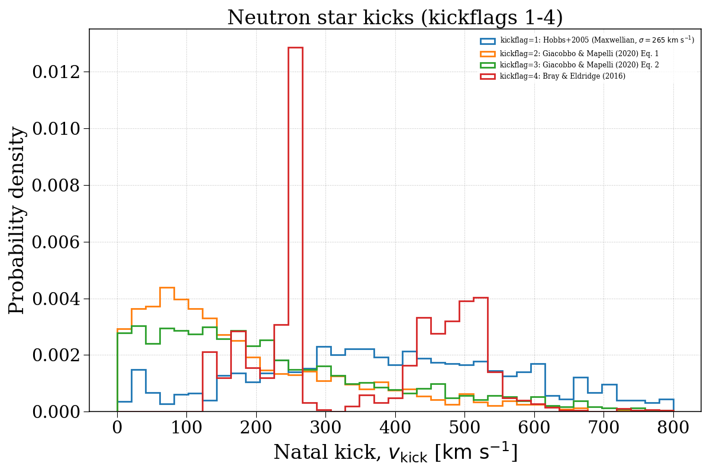
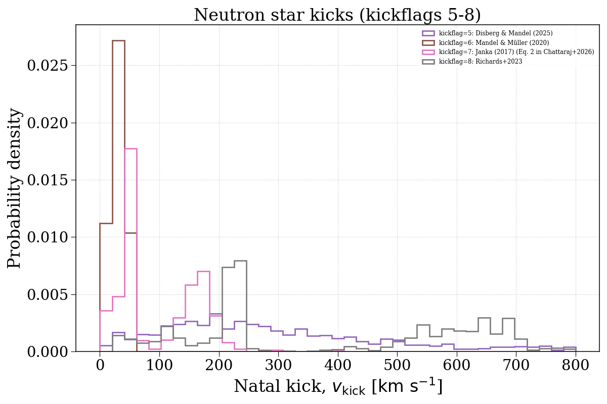
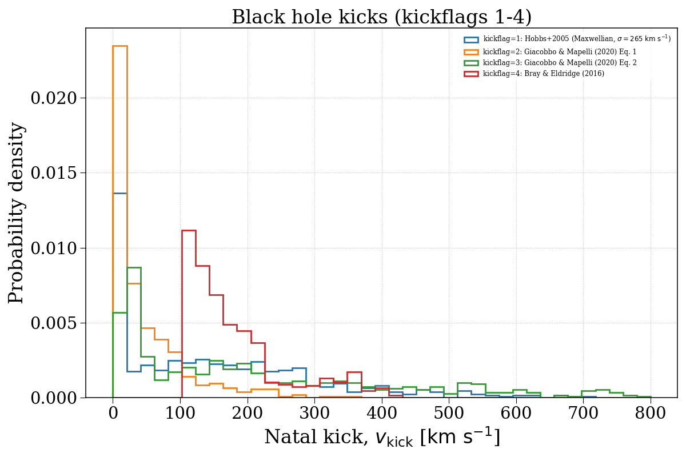
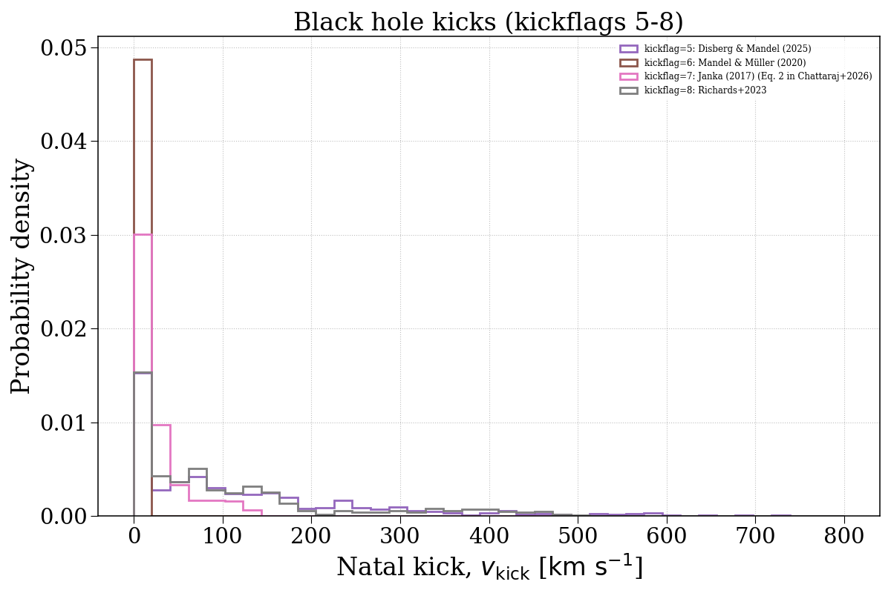

Note
Go to the end to download the full example code.
kickflag¶
This example demonstrates how changing the kickflag parameter can affect the natal kick velocity distributions of compact objects. We separate this into neutron stars and black holes.




Evolving population with kickflag = 1...
Evolving: 0%| | 0/2013 [00:00<?, ?sys/s]
Evolving: 1%| | 13/2013 [00:00<00:25, 79.86sys/s]
Evolving: 2%|▏ | 39/2013 [00:00<00:12, 163.06sys/s]
Evolving: 3%|▎ | 58/2013 [00:00<00:18, 107.75sys/s]
Evolving: 4%|▍ | 83/2013 [00:00<00:13, 140.42sys/s]
Evolving: 5%|▍ | 100/2013 [00:00<00:20, 94.77sys/s]
Evolving: 6%|▌ | 113/2013 [00:01<00:21, 87.68sys/s]
Evolving: 7%|▋ | 143/2013 [00:01<00:15, 124.34sys/s]
Evolving: 8%|▊ | 159/2013 [00:01<00:17, 108.17sys/s]
Evolving: 9%|▉ | 178/2013 [00:01<00:15, 116.13sys/s]
Evolving: 10%|▉ | 199/2013 [00:01<00:13, 130.69sys/s]
Evolving: 11%|█ | 214/2013 [00:01<00:13, 131.39sys/s]
Evolving: 11%|█▏ | 229/2013 [00:01<00:14, 123.82sys/s]
Evolving: 12%|█▏ | 243/2013 [00:02<00:14, 123.55sys/s]
Evolving: 13%|█▎ | 259/2013 [00:02<00:13, 131.17sys/s]
Evolving: 14%|█▎ | 273/2013 [00:02<00:13, 125.85sys/s]
Evolving: 14%|█▍ | 286/2013 [00:02<00:18, 90.97sys/s]
Evolving: 16%|█▌ | 317/2013 [00:02<00:12, 131.94sys/s]
Evolving: 17%|█▋ | 333/2013 [00:02<00:12, 133.42sys/s]
Evolving: 17%|█▋ | 348/2013 [00:02<00:12, 137.01sys/s]
Evolving: 18%|█▊ | 363/2013 [00:03<00:13, 125.12sys/s]
Evolving: 19%|█▊ | 377/2013 [00:03<00:14, 115.52sys/s]
Evolving: 20%|█▉ | 395/2013 [00:03<00:13, 124.04sys/s]
Evolving: 20%|██ | 408/2013 [00:03<00:12, 123.76sys/s]
Evolving: 21%|██ | 421/2013 [00:03<00:12, 125.08sys/s]
Evolving: 22%|██▏ | 434/2013 [00:03<00:14, 109.45sys/s]
Evolving: 23%|██▎ | 453/2013 [00:03<00:12, 126.83sys/s]
Evolving: 23%|██▎ | 467/2013 [00:03<00:13, 114.70sys/s]
Evolving: 24%|██▍ | 487/2013 [00:04<00:11, 134.17sys/s]
Evolving: 25%|██▍ | 502/2013 [00:04<00:11, 133.88sys/s]
Evolving: 26%|██▌ | 516/2013 [00:04<00:11, 124.80sys/s]
Evolving: 27%|██▋ | 534/2013 [00:04<00:11, 128.89sys/s]
Evolving: 27%|██▋ | 548/2013 [00:04<00:11, 130.24sys/s]
Evolving: 28%|██▊ | 562/2013 [00:04<00:11, 125.33sys/s]
Evolving: 29%|██▊ | 575/2013 [00:04<00:17, 84.04sys/s]
Evolving: 29%|██▉ | 589/2013 [00:05<00:16, 85.68sys/s]
Evolving: 31%|███ | 618/2013 [00:05<00:11, 120.08sys/s]
Evolving: 31%|███▏ | 632/2013 [00:05<00:11, 116.41sys/s]
Evolving: 32%|███▏ | 649/2013 [00:05<00:10, 127.95sys/s]
Evolving: 33%|███▎ | 663/2013 [00:05<00:10, 128.85sys/s]
Evolving: 34%|███▎ | 677/2013 [00:05<00:13, 100.53sys/s]
Evolving: 35%|███▍ | 700/2013 [00:05<00:10, 120.01sys/s]
Evolving: 36%|███▌ | 715/2013 [00:06<00:10, 123.19sys/s]
Evolving: 36%|███▋ | 732/2013 [00:06<00:09, 133.41sys/s]
Evolving: 37%|███▋ | 747/2013 [00:06<00:09, 134.04sys/s]
Evolving: 38%|███▊ | 762/2013 [00:06<00:09, 137.23sys/s]
Evolving: 39%|███▊ | 777/2013 [00:06<00:11, 106.98sys/s]
Evolving: 40%|███▉ | 797/2013 [00:06<00:09, 127.92sys/s]
Evolving: 40%|████ | 812/2013 [00:06<00:09, 126.03sys/s]
Evolving: 41%|████ | 826/2013 [00:06<00:09, 126.55sys/s]
Evolving: 42%|████▏ | 840/2013 [00:07<00:11, 103.66sys/s]
Evolving: 42%|████▏ | 852/2013 [00:07<00:12, 89.91sys/s]
Evolving: 43%|████▎ | 863/2013 [00:07<00:13, 83.78sys/s]
Evolving: 44%|████▍ | 890/2013 [00:07<00:12, 89.12sys/s]
Evolving: 46%|████▌ | 920/2013 [00:07<00:09, 118.82sys/s]
Evolving: 46%|████▋ | 933/2013 [00:07<00:09, 119.57sys/s]
Evolving: 47%|████▋ | 951/2013 [00:08<00:08, 131.38sys/s]
Evolving: 48%|████▊ | 966/2013 [00:08<00:10, 103.94sys/s]
Evolving: 49%|████▊ | 978/2013 [00:08<00:09, 106.19sys/s]
Evolving: 50%|████▉ | 997/2013 [00:08<00:08, 123.41sys/s]
Evolving: 50%|█████ | 1011/2013 [00:08<00:07, 125.29sys/s]
Evolving: 51%|█████ | 1026/2013 [00:08<00:07, 129.41sys/s]
Evolving: 52%|█████▏ | 1040/2013 [00:08<00:07, 129.12sys/s]
Evolving: 52%|█████▏ | 1054/2013 [00:08<00:07, 120.11sys/s]
Evolving: 53%|█████▎ | 1071/2013 [00:09<00:07, 131.15sys/s]
Evolving: 54%|█████▍ | 1086/2013 [00:09<00:06, 134.51sys/s]
Evolving: 55%|█████▍ | 1100/2013 [00:09<00:07, 126.68sys/s]
Evolving: 55%|█████▌ | 1113/2013 [00:09<00:07, 116.59sys/s]
Evolving: 56%|█████▌ | 1125/2013 [00:09<00:08, 100.99sys/s]
Evolving: 57%|█████▋ | 1146/2013 [00:09<00:06, 124.80sys/s]
Evolving: 58%|█████▊ | 1160/2013 [00:09<00:06, 127.96sys/s]
Evolving: 58%|█████▊ | 1174/2013 [00:09<00:06, 128.71sys/s]
Evolving: 59%|█████▉ | 1188/2013 [00:10<00:06, 130.42sys/s]
Evolving: 60%|█████▉ | 1202/2013 [00:10<00:06, 131.33sys/s]
Evolving: 60%|██████ | 1217/2013 [00:10<00:06, 130.12sys/s]
Evolving: 61%|██████ | 1231/2013 [00:10<00:08, 88.99sys/s]
Evolving: 63%|██████▎ | 1261/2013 [00:10<00:05, 133.02sys/s]
Evolving: 63%|██████▎ | 1278/2013 [00:10<00:05, 127.74sys/s]
Evolving: 64%|██████▍ | 1294/2013 [00:10<00:05, 133.30sys/s]
Evolving: 65%|██████▌ | 1310/2013 [00:11<00:05, 124.28sys/s]
Evolving: 66%|██████▌ | 1325/2013 [00:11<00:05, 125.85sys/s]
Evolving: 67%|██████▋ | 1339/2013 [00:11<00:06, 101.84sys/s]
Evolving: 67%|██████▋ | 1351/2013 [00:11<00:07, 89.01sys/s]
Evolving: 68%|██████▊ | 1376/2013 [00:11<00:05, 115.15sys/s]
Evolving: 69%|██████▉ | 1394/2013 [00:11<00:04, 128.17sys/s]
Evolving: 70%|██████▉ | 1409/2013 [00:11<00:04, 128.37sys/s]
Evolving: 71%|███████ | 1423/2013 [00:11<00:04, 130.90sys/s]
Evolving: 71%|███████▏ | 1439/2013 [00:12<00:04, 138.38sys/s]
Evolving: 72%|███████▏ | 1454/2013 [00:12<00:04, 135.71sys/s]
Evolving: 73%|███████▎ | 1468/2013 [00:12<00:04, 131.87sys/s]
Evolving: 74%|███████▍ | 1486/2013 [00:12<00:03, 132.49sys/s]
Evolving: 75%|███████▍ | 1501/2013 [00:12<00:03, 135.51sys/s]
Evolving: 75%|███████▌ | 1515/2013 [00:12<00:03, 125.52sys/s]
Evolving: 76%|███████▌ | 1528/2013 [00:12<00:05, 94.92sys/s]
Evolving: 77%|███████▋ | 1556/2013 [00:13<00:03, 134.29sys/s]
Evolving: 78%|███████▊ | 1572/2013 [00:13<00:04, 91.78sys/s]
Evolving: 80%|███████▉ | 1607/2013 [00:13<00:02, 135.47sys/s]
Evolving: 81%|████████ | 1626/2013 [00:13<00:02, 139.10sys/s]
Evolving: 82%|████████▏ | 1644/2013 [00:13<00:02, 134.06sys/s]
Evolving: 82%|████████▏ | 1660/2013 [00:13<00:02, 135.44sys/s]
Evolving: 83%|████████▎ | 1676/2013 [00:13<00:02, 140.23sys/s]
Evolving: 84%|████████▍ | 1692/2013 [00:14<00:02, 114.89sys/s]
Evolving: 85%|████████▍ | 1711/2013 [00:14<00:02, 129.17sys/s]
Evolving: 86%|████████▌ | 1726/2013 [00:14<00:02, 130.96sys/s]
Evolving: 86%|████████▋ | 1741/2013 [00:14<00:02, 127.55sys/s]
Evolving: 87%|████████▋ | 1755/2013 [00:14<00:02, 120.84sys/s]
Evolving: 88%|████████▊ | 1773/2013 [00:14<00:01, 134.93sys/s]
Evolving: 89%|████████▉ | 1788/2013 [00:14<00:01, 137.83sys/s]
Evolving: 90%|████████▉ | 1803/2013 [00:15<00:01, 117.45sys/s]
Evolving: 90%|█████████ | 1816/2013 [00:15<00:02, 90.60sys/s]
Evolving: 92%|█████████▏| 1842/2013 [00:15<00:01, 119.87sys/s]
Evolving: 92%|█████████▏| 1856/2013 [00:15<00:01, 122.27sys/s]
Evolving: 93%|█████████▎| 1870/2013 [00:15<00:01, 120.76sys/s]
Evolving: 94%|█████████▎| 1883/2013 [00:15<00:01, 109.95sys/s]
Evolving: 95%|█████████▍| 1903/2013 [00:15<00:00, 129.66sys/s]
Evolving: 95%|█████████▌| 1917/2013 [00:15<00:00, 118.91sys/s]
Evolving: 96%|█████████▌| 1930/2013 [00:16<00:00, 98.77sys/s]
Evolving: 97%|█████████▋| 1953/2013 [00:16<00:00, 126.94sys/s]
Evolving: 98%|█████████▊| 1968/2013 [00:16<00:00, 125.64sys/s]
Evolving: 99%|█████████▊| 1983/2013 [00:16<00:00, 130.02sys/s]
Evolving: 99%|█████████▉| 1997/2013 [00:16<00:00, 103.85sys/s]
Evolving: 100%|██████████| 2013/2013 [00:16<00:00, 119.64sys/s]
[Time taken: 17.1556 seconds]
Evolving population with kickflag = 2...
Evolving: 0%| | 0/2013 [00:00<?, ?sys/s]
Evolving: 1%| | 11/2013 [00:00<00:22, 87.53sys/s]
Evolving: 1%| | 20/2013 [00:00<00:31, 63.32sys/s]
Evolving: 2%|▏ | 39/2013 [00:00<00:20, 96.71sys/s]
Evolving: 2%|▏ | 50/2013 [00:00<00:27, 71.10sys/s]
Evolving: 4%|▍ | 82/2013 [00:00<00:15, 127.80sys/s]
Evolving: 5%|▍ | 98/2013 [00:00<00:15, 127.47sys/s]
Evolving: 6%|▌ | 113/2013 [00:01<00:23, 79.27sys/s]
Evolving: 7%|▋ | 142/2013 [00:01<00:16, 115.99sys/s]
Evolving: 8%|▊ | 159/2013 [00:01<00:18, 102.66sys/s]
Evolving: 9%|▊ | 175/2013 [00:01<00:16, 113.22sys/s]
Evolving: 9%|▉ | 190/2013 [00:01<00:15, 120.59sys/s]
Evolving: 10%|█ | 205/2013 [00:01<00:15, 116.59sys/s]
Evolving: 11%|█ | 221/2013 [00:02<00:14, 125.66sys/s]
Evolving: 12%|█▏ | 236/2013 [00:02<00:14, 123.51sys/s]
Evolving: 12%|█▏ | 250/2013 [00:02<00:13, 127.38sys/s]
Evolving: 13%|█▎ | 264/2013 [00:02<00:14, 116.79sys/s]
Evolving: 14%|█▍ | 279/2013 [00:02<00:13, 123.93sys/s]
Evolving: 15%|█▍ | 292/2013 [00:02<00:17, 98.81sys/s]
Evolving: 16%|█▌ | 316/2013 [00:02<00:13, 129.36sys/s]
Evolving: 16%|█▋ | 331/2013 [00:02<00:13, 128.49sys/s]
Evolving: 17%|█▋ | 346/2013 [00:03<00:13, 126.28sys/s]
Evolving: 18%|█▊ | 360/2013 [00:03<00:13, 120.09sys/s]
Evolving: 19%|█▊ | 376/2013 [00:03<00:13, 123.34sys/s]
Evolving: 19%|█▉ | 390/2013 [00:03<00:13, 122.88sys/s]
Evolving: 20%|██ | 404/2013 [00:03<00:14, 107.36sys/s]
Evolving: 21%|██ | 424/2013 [00:03<00:12, 125.98sys/s]
Evolving: 22%|██▏ | 438/2013 [00:03<00:13, 120.05sys/s]
Evolving: 22%|██▏ | 451/2013 [00:03<00:12, 120.20sys/s]
Evolving: 23%|██▎ | 467/2013 [00:04<00:13, 116.72sys/s]
Evolving: 24%|██▍ | 485/2013 [00:04<00:11, 129.43sys/s]
Evolving: 25%|██▍ | 499/2013 [00:04<00:11, 126.74sys/s]
Evolving: 25%|██▌ | 512/2013 [00:04<00:11, 125.39sys/s]
Evolving: 26%|██▋ | 529/2013 [00:04<00:11, 128.39sys/s]
Evolving: 27%|██▋ | 542/2013 [00:04<00:12, 115.61sys/s]
Evolving: 28%|██▊ | 558/2013 [00:04<00:11, 124.28sys/s]
Evolving: 28%|██▊ | 571/2013 [00:04<00:13, 109.32sys/s]
Evolving: 29%|██▉ | 583/2013 [00:05<00:15, 89.94sys/s]
Evolving: 30%|██▉ | 603/2013 [00:05<00:12, 110.83sys/s]
Evolving: 31%|███ | 618/2013 [00:05<00:12, 114.67sys/s]
Evolving: 31%|███▏ | 631/2013 [00:05<00:11, 117.16sys/s]
Evolving: 32%|███▏ | 644/2013 [00:05<00:11, 119.57sys/s]
Evolving: 33%|███▎ | 658/2013 [00:05<00:11, 122.96sys/s]
Evolving: 33%|███▎ | 671/2013 [00:05<00:15, 86.53sys/s]
Evolving: 35%|███▍ | 700/2013 [00:06<00:10, 127.14sys/s]
Evolving: 36%|███▌ | 716/2013 [00:06<00:10, 128.68sys/s]
Evolving: 36%|███▋ | 731/2013 [00:06<00:09, 133.29sys/s]
Evolving: 37%|███▋ | 746/2013 [00:06<00:09, 134.42sys/s]
Evolving: 38%|███▊ | 761/2013 [00:06<00:09, 132.46sys/s]
Evolving: 38%|███▊ | 775/2013 [00:06<00:12, 102.64sys/s]
Evolving: 40%|███▉ | 798/2013 [00:06<00:09, 129.27sys/s]
Evolving: 40%|████ | 813/2013 [00:06<00:09, 127.08sys/s]
Evolving: 41%|████ | 827/2013 [00:07<00:09, 122.99sys/s]
Evolving: 42%|████▏ | 841/2013 [00:07<00:10, 114.60sys/s]
Evolving: 42%|████▏ | 854/2013 [00:07<00:12, 90.28sys/s]
Evolving: 43%|████▎ | 865/2013 [00:07<00:13, 86.87sys/s]
Evolving: 44%|████▍ | 890/2013 [00:07<00:12, 86.84sys/s]
Evolving: 46%|████▌ | 920/2013 [00:08<00:09, 120.04sys/s]
Evolving: 46%|████▋ | 934/2013 [00:08<00:09, 115.53sys/s]
Evolving: 47%|████▋ | 951/2013 [00:08<00:08, 118.40sys/s]
Evolving: 48%|████▊ | 964/2013 [00:08<00:10, 98.27sys/s]
Evolving: 49%|████▉ | 984/2013 [00:08<00:08, 117.76sys/s]
Evolving: 50%|████▉ | 998/2013 [00:08<00:08, 120.58sys/s]
Evolving: 50%|█████ | 1012/2013 [00:08<00:08, 115.38sys/s]
Evolving: 51%|█████ | 1029/2013 [00:08<00:07, 126.34sys/s]
Evolving: 52%|█████▏ | 1044/2013 [00:09<00:07, 125.31sys/s]
Evolving: 53%|█████▎ | 1058/2013 [00:09<00:07, 125.99sys/s]
Evolving: 53%|█████▎ | 1072/2013 [00:09<00:07, 121.03sys/s]
Evolving: 54%|█████▍ | 1089/2013 [00:09<00:06, 132.01sys/s]
Evolving: 55%|█████▍ | 1103/2013 [00:09<00:06, 130.02sys/s]
Evolving: 55%|█████▌ | 1117/2013 [00:09<00:10, 87.40sys/s]
Evolving: 57%|█████▋ | 1150/2013 [00:09<00:06, 126.94sys/s]
Evolving: 58%|█████▊ | 1168/2013 [00:10<00:06, 132.22sys/s]
Evolving: 59%|█████▉ | 1184/2013 [00:10<00:06, 132.85sys/s]
Evolving: 60%|█████▉ | 1199/2013 [00:10<00:05, 135.94sys/s]
Evolving: 60%|██████ | 1214/2013 [00:10<00:06, 132.84sys/s]
Evolving: 61%|██████ | 1228/2013 [00:10<00:08, 87.59sys/s]
Evolving: 63%|██████▎ | 1261/2013 [00:10<00:05, 132.22sys/s]
Evolving: 64%|██████▎ | 1279/2013 [00:10<00:05, 133.44sys/s]
Evolving: 64%|██████▍ | 1296/2013 [00:11<00:05, 134.71sys/s]
Evolving: 65%|██████▌ | 1312/2013 [00:11<00:05, 125.66sys/s]
Evolving: 66%|██████▌ | 1326/2013 [00:11<00:05, 126.05sys/s]
Evolving: 67%|██████▋ | 1340/2013 [00:11<00:06, 100.84sys/s]
Evolving: 67%|██████▋ | 1352/2013 [00:11<00:07, 93.22sys/s]
Evolving: 68%|██████▊ | 1375/2013 [00:11<00:05, 116.60sys/s]
Evolving: 69%|██████▉ | 1388/2013 [00:11<00:05, 118.98sys/s]
Evolving: 70%|██████▉ | 1401/2013 [00:12<00:05, 120.57sys/s]
Evolving: 70%|███████ | 1417/2013 [00:12<00:05, 118.56sys/s]
Evolving: 71%|███████▏ | 1437/2013 [00:12<00:04, 129.75sys/s]
Evolving: 72%|███████▏ | 1455/2013 [00:12<00:04, 139.30sys/s]
Evolving: 73%|███████▎ | 1470/2013 [00:12<00:03, 139.87sys/s]
Evolving: 74%|███████▍ | 1485/2013 [00:12<00:03, 136.70sys/s]
Evolving: 74%|███████▍ | 1499/2013 [00:12<00:03, 132.82sys/s]
Evolving: 75%|███████▌ | 1513/2013 [00:12<00:04, 114.21sys/s]
Evolving: 76%|███████▌ | 1525/2013 [00:13<00:05, 88.76sys/s]
Evolving: 77%|███████▋ | 1554/2013 [00:13<00:03, 128.89sys/s]
Evolving: 78%|███████▊ | 1570/2013 [00:13<00:04, 89.45sys/s]
Evolving: 80%|███████▉ | 1607/2013 [00:13<00:02, 136.44sys/s]
Evolving: 81%|████████ | 1626/2013 [00:13<00:02, 140.56sys/s]
Evolving: 82%|████████▏ | 1644/2013 [00:13<00:02, 135.88sys/s]
Evolving: 82%|████████▏ | 1660/2013 [00:14<00:02, 133.77sys/s]
Evolving: 83%|████████▎ | 1676/2013 [00:14<00:02, 137.96sys/s]
Evolving: 84%|████████▍ | 1692/2013 [00:14<00:02, 116.14sys/s]
Evolving: 85%|████████▍ | 1711/2013 [00:14<00:02, 129.14sys/s]
Evolving: 86%|████████▌ | 1726/2013 [00:14<00:02, 130.71sys/s]
Evolving: 86%|████████▋ | 1740/2013 [00:14<00:02, 131.63sys/s]
Evolving: 87%|████████▋ | 1754/2013 [00:14<00:01, 132.41sys/s]
Evolving: 88%|████████▊ | 1768/2013 [00:14<00:01, 130.89sys/s]
Evolving: 89%|████████▊ | 1782/2013 [00:15<00:01, 124.52sys/s]
Evolving: 89%|████████▉ | 1795/2013 [00:15<00:02, 96.39sys/s]
Evolving: 90%|█████████ | 1813/2013 [00:15<00:02, 91.39sys/s]
Evolving: 91%|█████████ | 1824/2013 [00:15<00:02, 94.35sys/s]
Evolving: 92%|█████████▏| 1852/2013 [00:15<00:01, 133.53sys/s]
Evolving: 93%|█████████▎| 1867/2013 [00:15<00:01, 133.54sys/s]
Evolving: 93%|█████████▎| 1882/2013 [00:15<00:00, 133.37sys/s]
Evolving: 94%|█████████▍| 1897/2013 [00:16<00:00, 128.68sys/s]
Evolving: 95%|█████████▍| 1911/2013 [00:16<00:00, 118.65sys/s]
Evolving: 96%|█████████▌| 1924/2013 [00:16<00:00, 92.76sys/s]
Evolving: 97%|█████████▋| 1945/2013 [00:16<00:00, 114.70sys/s]
Evolving: 98%|█████████▊| 1963/2013 [00:16<00:00, 129.27sys/s]
Evolving: 98%|█████████▊| 1979/2013 [00:16<00:00, 128.12sys/s]
Evolving: 99%|█████████▉| 1993/2013 [00:17<00:00, 103.30sys/s]
Evolving: 100%|█████████▉| 2005/2013 [00:17<00:00, 103.99sys/s]
Evolving: 100%|██████████| 2013/2013 [00:17<00:00, 117.61sys/s]
[Time taken: 17.3020 seconds]
Evolving population with kickflag = 3...
Evolving: 0%| | 0/2013 [00:00<?, ?sys/s]
Evolving: 1%| | 11/2013 [00:00<00:20, 99.57sys/s]
Evolving: 1%| | 21/2013 [00:00<00:29, 67.38sys/s]
Evolving: 2%|▏ | 39/2013 [00:00<00:20, 98.28sys/s]
Evolving: 2%|▏ | 50/2013 [00:00<00:28, 68.62sys/s]
Evolving: 4%|▍ | 82/2013 [00:00<00:15, 124.22sys/s]
Evolving: 5%|▍ | 98/2013 [00:00<00:15, 125.64sys/s]
Evolving: 6%|▌ | 113/2013 [00:01<00:23, 82.43sys/s]
Evolving: 7%|▋ | 140/2013 [00:01<00:16, 116.27sys/s]
Evolving: 8%|▊ | 157/2013 [00:01<00:18, 100.01sys/s]
Evolving: 9%|▉ | 178/2013 [00:01<00:16, 111.26sys/s]
Evolving: 10%|▉ | 198/2013 [00:01<00:14, 126.19sys/s]
Evolving: 11%|█ | 214/2013 [00:01<00:14, 123.01sys/s]
Evolving: 11%|█▏ | 228/2013 [00:02<00:14, 121.89sys/s]
Evolving: 12%|█▏ | 244/2013 [00:02<00:13, 129.82sys/s]
Evolving: 13%|█▎ | 258/2013 [00:02<00:13, 129.20sys/s]
Evolving: 14%|█▎ | 272/2013 [00:02<00:14, 123.71sys/s]
Evolving: 14%|█▍ | 285/2013 [00:02<00:14, 122.79sys/s]
Evolving: 15%|█▍ | 298/2013 [00:02<00:15, 109.25sys/s]
Evolving: 16%|█▌ | 316/2013 [00:02<00:13, 125.64sys/s]
Evolving: 16%|█▋ | 330/2013 [00:02<00:13, 123.91sys/s]
Evolving: 17%|█▋ | 345/2013 [00:03<00:12, 129.53sys/s]
Evolving: 18%|█▊ | 359/2013 [00:03<00:14, 111.94sys/s]
Evolving: 19%|█▊ | 377/2013 [00:03<00:14, 113.83sys/s]
Evolving: 20%|█▉ | 393/2013 [00:03<00:13, 124.23sys/s]
Evolving: 20%|██ | 406/2013 [00:03<00:14, 113.69sys/s]
Evolving: 21%|██ | 422/2013 [00:03<00:13, 122.23sys/s]
Evolving: 22%|██▏ | 435/2013 [00:03<00:14, 109.68sys/s]
Evolving: 23%|██▎ | 454/2013 [00:03<00:12, 126.66sys/s]
Evolving: 23%|██▎ | 468/2013 [00:04<00:12, 119.31sys/s]
Evolving: 24%|██▍ | 484/2013 [00:04<00:12, 126.39sys/s]
Evolving: 25%|██▍ | 500/2013 [00:04<00:11, 131.49sys/s]
Evolving: 26%|██▌ | 514/2013 [00:04<00:11, 126.48sys/s]
Evolving: 26%|██▋ | 530/2013 [00:04<00:11, 130.25sys/s]
Evolving: 27%|██▋ | 544/2013 [00:04<00:12, 118.69sys/s]
Evolving: 28%|██▊ | 557/2013 [00:04<00:12, 120.60sys/s]
Evolving: 28%|██▊ | 571/2013 [00:04<00:13, 107.14sys/s]
Evolving: 29%|██▉ | 583/2013 [00:05<00:16, 87.38sys/s]
Evolving: 29%|██▉ | 593/2013 [00:05<00:16, 85.38sys/s]
Evolving: 31%|███ | 618/2013 [00:05<00:11, 120.35sys/s]
Evolving: 31%|███▏ | 632/2013 [00:05<00:12, 109.80sys/s]
Evolving: 32%|███▏ | 647/2013 [00:05<00:11, 116.74sys/s]
Evolving: 33%|███▎ | 664/2013 [00:05<00:10, 129.46sys/s]
Evolving: 34%|███▎ | 678/2013 [00:05<00:12, 103.43sys/s]
Evolving: 35%|███▍ | 699/2013 [00:06<00:10, 124.58sys/s]
Evolving: 35%|███▌ | 713/2013 [00:06<00:10, 124.33sys/s]
Evolving: 36%|███▌ | 728/2013 [00:06<00:09, 128.50sys/s]
Evolving: 37%|███▋ | 742/2013 [00:06<00:09, 128.85sys/s]
Evolving: 38%|███▊ | 757/2013 [00:06<00:09, 134.37sys/s]
Evolving: 38%|███▊ | 771/2013 [00:06<00:12, 98.31sys/s]
Evolving: 39%|███▉ | 794/2013 [00:06<00:09, 126.56sys/s]
Evolving: 40%|████ | 809/2013 [00:06<00:09, 127.59sys/s]
Evolving: 41%|████ | 824/2013 [00:07<00:09, 123.50sys/s]
Evolving: 42%|████▏ | 839/2013 [00:07<00:09, 128.36sys/s]
Evolving: 42%|████▏ | 853/2013 [00:07<00:13, 88.30sys/s]
Evolving: 43%|████▎ | 864/2013 [00:07<00:13, 87.37sys/s]
Evolving: 44%|████▍ | 889/2013 [00:07<00:09, 121.43sys/s]
Evolving: 45%|████▍ | 904/2013 [00:07<00:10, 102.37sys/s]
Evolving: 46%|████▌ | 920/2013 [00:08<00:10, 105.43sys/s]
Evolving: 46%|████▋ | 933/2013 [00:08<00:09, 109.58sys/s]
Evolving: 47%|████▋ | 947/2013 [00:08<00:09, 113.23sys/s]
Evolving: 48%|████▊ | 960/2013 [00:08<00:11, 90.42sys/s]
Evolving: 48%|████▊ | 971/2013 [00:08<00:11, 90.03sys/s]
Evolving: 50%|████▉ | 999/2013 [00:08<00:07, 131.05sys/s]
Evolving: 50%|█████ | 1014/2013 [00:08<00:07, 129.89sys/s]
Evolving: 51%|█████ | 1029/2013 [00:08<00:07, 132.89sys/s]
Evolving: 52%|█████▏ | 1044/2013 [00:09<00:07, 134.54sys/s]
Evolving: 53%|█████▎ | 1059/2013 [00:09<00:07, 129.44sys/s]
Evolving: 53%|█████▎ | 1073/2013 [00:09<00:07, 125.95sys/s]
Evolving: 54%|█████▍ | 1088/2013 [00:09<00:06, 132.16sys/s]
Evolving: 55%|█████▍ | 1102/2013 [00:09<00:07, 126.11sys/s]
Evolving: 55%|█████▌ | 1115/2013 [00:09<00:10, 87.75sys/s]
Evolving: 57%|█████▋ | 1146/2013 [00:09<00:06, 128.83sys/s]
Evolving: 58%|█████▊ | 1162/2013 [00:10<00:06, 133.18sys/s]
Evolving: 58%|█████▊ | 1177/2013 [00:10<00:06, 132.71sys/s]
Evolving: 59%|█████▉ | 1192/2013 [00:10<00:06, 129.10sys/s]
Evolving: 60%|█████▉ | 1207/2013 [00:10<00:06, 132.97sys/s]
Evolving: 61%|██████ | 1222/2013 [00:10<00:05, 134.63sys/s]
Evolving: 61%|██████▏ | 1236/2013 [00:10<00:08, 94.55sys/s]
Evolving: 63%|██████▎ | 1264/2013 [00:10<00:06, 123.58sys/s]
Evolving: 64%|██████▎ | 1281/2013 [00:11<00:05, 129.75sys/s]
Evolving: 64%|██████▍ | 1296/2013 [00:11<00:05, 132.23sys/s]
Evolving: 65%|██████▌ | 1311/2013 [00:11<00:05, 125.63sys/s]
Evolving: 66%|██████▌ | 1325/2013 [00:11<00:05, 125.49sys/s]
Evolving: 67%|██████▋ | 1339/2013 [00:11<00:06, 100.45sys/s]
Evolving: 67%|██████▋ | 1351/2013 [00:11<00:07, 91.52sys/s]
Evolving: 68%|██████▊ | 1375/2013 [00:11<00:05, 122.75sys/s]
Evolving: 69%|██████▉ | 1389/2013 [00:11<00:05, 118.78sys/s]
Evolving: 70%|██████▉ | 1404/2013 [00:12<00:05, 120.28sys/s]
Evolving: 70%|███████ | 1418/2013 [00:12<00:05, 116.55sys/s]
Evolving: 71%|███████▏ | 1436/2013 [00:12<00:04, 130.15sys/s]
Evolving: 72%|███████▏ | 1450/2013 [00:12<00:04, 129.11sys/s]
Evolving: 73%|███████▎ | 1467/2013 [00:12<00:03, 139.45sys/s]
Evolving: 74%|███████▎ | 1482/2013 [00:12<00:03, 133.80sys/s]
Evolving: 74%|███████▍ | 1496/2013 [00:12<00:03, 129.99sys/s]
Evolving: 75%|███████▌ | 1510/2013 [00:12<00:03, 129.84sys/s]
Evolving: 76%|███████▌ | 1524/2013 [00:13<00:05, 85.97sys/s]
Evolving: 77%|███████▋ | 1558/2013 [00:13<00:03, 132.88sys/s]
Evolving: 78%|███████▊ | 1575/2013 [00:13<00:04, 97.40sys/s]
Evolving: 80%|███████▉ | 1606/2013 [00:13<00:03, 135.06sys/s]
Evolving: 81%|████████ | 1625/2013 [00:13<00:02, 134.50sys/s]
Evolving: 82%|████████▏ | 1642/2013 [00:13<00:02, 135.43sys/s]
Evolving: 82%|████████▏ | 1658/2013 [00:14<00:02, 136.28sys/s]
Evolving: 83%|████████▎ | 1674/2013 [00:14<00:02, 127.44sys/s]
Evolving: 84%|████████▍ | 1688/2013 [00:14<00:02, 109.42sys/s]
Evolving: 85%|████████▌ | 1712/2013 [00:14<00:02, 137.81sys/s]
Evolving: 86%|████████▌ | 1728/2013 [00:14<00:02, 127.90sys/s]
Evolving: 87%|████████▋ | 1745/2013 [00:14<00:02, 130.77sys/s]
Evolving: 87%|████████▋ | 1761/2013 [00:14<00:01, 137.33sys/s]
Evolving: 88%|████████▊ | 1776/2013 [00:15<00:01, 131.22sys/s]
Evolving: 89%|████████▉ | 1790/2013 [00:15<00:01, 132.70sys/s]
Evolving: 90%|████████▉ | 1804/2013 [00:15<00:01, 119.04sys/s]
Evolving: 90%|█████████ | 1817/2013 [00:15<00:02, 89.52sys/s]
Evolving: 92%|█████████▏| 1842/2013 [00:15<00:01, 122.03sys/s]
Evolving: 92%|█████████▏| 1857/2013 [00:15<00:01, 123.65sys/s]
Evolving: 93%|█████████▎| 1871/2013 [00:15<00:01, 119.20sys/s]
Evolving: 94%|█████████▎| 1885/2013 [00:16<00:01, 115.57sys/s]
Evolving: 94%|█████████▍| 1901/2013 [00:16<00:00, 125.10sys/s]
Evolving: 95%|█████████▌| 1915/2013 [00:16<00:00, 109.26sys/s]
Evolving: 96%|█████████▌| 1927/2013 [00:16<00:00, 97.87sys/s]
Evolving: 97%|█████████▋| 1945/2013 [00:16<00:00, 115.69sys/s]
Evolving: 98%|█████████▊| 1965/2013 [00:16<00:00, 135.45sys/s]
Evolving: 98%|█████████▊| 1980/2013 [00:16<00:00, 131.63sys/s]
Evolving: 99%|█████████▉| 1994/2013 [00:17<00:00, 99.68sys/s]
Evolving: 100%|██████████| 2013/2013 [00:17<00:00, 117.79sys/s]
[Time taken: 17.2816 seconds]
Evolving population with kickflag = 4...
Evolving: 0%| | 0/2013 [00:00<?, ?sys/s]
Evolving: 0%| | 9/2013 [00:00<00:24, 81.84sys/s]
Evolving: 1%| | 18/2013 [00:00<00:35, 56.47sys/s]
Evolving: 2%|▏ | 39/2013 [00:00<00:19, 102.00sys/s]
Evolving: 3%|▎ | 51/2013 [00:00<00:25, 78.08sys/s]
Evolving: 4%|▍ | 80/2013 [00:00<00:15, 124.33sys/s]
Evolving: 5%|▍ | 95/2013 [00:00<00:15, 124.05sys/s]
Evolving: 5%|▌ | 109/2013 [00:01<00:18, 102.77sys/s]
Evolving: 6%|▌ | 121/2013 [00:01<00:19, 96.33sys/s]
Evolving: 7%|▋ | 140/2013 [00:01<00:16, 115.76sys/s]
Evolving: 8%|▊ | 153/2013 [00:01<00:20, 89.60sys/s]
Evolving: 9%|▉ | 178/2013 [00:01<00:16, 114.59sys/s]
Evolving: 10%|▉ | 194/2013 [00:01<00:14, 123.82sys/s]
Evolving: 10%|█ | 208/2013 [00:01<00:14, 125.82sys/s]
Evolving: 11%|█ | 222/2013 [00:02<00:13, 129.34sys/s]
Evolving: 12%|█▏ | 236/2013 [00:02<00:13, 129.11sys/s]
Evolving: 12%|█▏ | 250/2013 [00:02<00:13, 128.00sys/s]
Evolving: 13%|█▎ | 264/2013 [00:02<00:15, 115.60sys/s]
Evolving: 14%|█▍ | 281/2013 [00:02<00:13, 126.35sys/s]
Evolving: 15%|█▍ | 295/2013 [00:02<00:15, 107.50sys/s]
Evolving: 16%|█▌ | 315/2013 [00:02<00:13, 124.91sys/s]
Evolving: 16%|█▋ | 329/2013 [00:02<00:13, 125.67sys/s]
Evolving: 17%|█▋ | 345/2013 [00:03<00:13, 124.03sys/s]
Evolving: 18%|█▊ | 358/2013 [00:03<00:14, 113.47sys/s]
Evolving: 19%|█▊ | 377/2013 [00:03<00:13, 119.29sys/s]
Evolving: 20%|█▉ | 395/2013 [00:03<00:12, 132.65sys/s]
Evolving: 20%|██ | 409/2013 [00:03<00:12, 127.23sys/s]
Evolving: 21%|██ | 423/2013 [00:03<00:12, 123.96sys/s]
Evolving: 22%|██▏ | 436/2013 [00:03<00:13, 116.45sys/s]
Evolving: 22%|██▏ | 452/2013 [00:03<00:12, 125.74sys/s]
Evolving: 23%|██▎ | 465/2013 [00:04<00:12, 124.11sys/s]
Evolving: 24%|██▎ | 478/2013 [00:04<00:12, 122.32sys/s]
Evolving: 25%|██▍ | 494/2013 [00:04<00:11, 132.06sys/s]
Evolving: 25%|██▌ | 508/2013 [00:04<00:13, 114.43sys/s]
Evolving: 26%|██▌ | 527/2013 [00:04<00:11, 132.27sys/s]
Evolving: 27%|██▋ | 541/2013 [00:04<00:11, 132.43sys/s]
Evolving: 28%|██▊ | 555/2013 [00:04<00:12, 115.85sys/s]
Evolving: 28%|██▊ | 571/2013 [00:04<00:13, 107.50sys/s]
Evolving: 29%|██▉ | 583/2013 [00:05<00:15, 91.00sys/s]
Evolving: 29%|██▉ | 593/2013 [00:05<00:16, 88.66sys/s]
Evolving: 31%|███ | 618/2013 [00:05<00:11, 122.71sys/s]
Evolving: 31%|███▏ | 632/2013 [00:05<00:12, 107.52sys/s]
Evolving: 32%|███▏ | 652/2013 [00:05<00:11, 122.71sys/s]
Evolving: 33%|███▎ | 667/2013 [00:05<00:14, 91.99sys/s]
Evolving: 35%|███▍ | 698/2013 [00:06<00:10, 129.98sys/s]
Evolving: 35%|███▌ | 714/2013 [00:06<00:10, 129.77sys/s]
Evolving: 36%|███▋ | 730/2013 [00:06<00:09, 135.34sys/s]
Evolving: 37%|███▋ | 745/2013 [00:06<00:09, 135.52sys/s]
Evolving: 38%|███▊ | 760/2013 [00:06<00:09, 135.13sys/s]
Evolving: 38%|███▊ | 775/2013 [00:06<00:11, 107.00sys/s]
Evolving: 40%|███▉ | 796/2013 [00:06<00:09, 124.69sys/s]
Evolving: 40%|████ | 810/2013 [00:06<00:09, 127.68sys/s]
Evolving: 41%|████ | 824/2013 [00:07<00:09, 124.73sys/s]
Evolving: 42%|████▏ | 838/2013 [00:07<00:09, 126.85sys/s]
Evolving: 42%|████▏ | 852/2013 [00:07<00:13, 85.75sys/s]
Evolving: 43%|████▎ | 863/2013 [00:07<00:13, 84.76sys/s]
Evolving: 44%|████▍ | 890/2013 [00:07<00:13, 86.04sys/s]
Evolving: 46%|████▌ | 920/2013 [00:08<00:09, 119.49sys/s]
Evolving: 46%|████▋ | 935/2013 [00:08<00:09, 117.27sys/s]
Evolving: 47%|████▋ | 951/2013 [00:08<00:08, 122.78sys/s]
Evolving: 48%|████▊ | 965/2013 [00:08<00:10, 101.10sys/s]
Evolving: 49%|████▊ | 977/2013 [00:08<00:09, 104.30sys/s]
Evolving: 49%|████▉ | 995/2013 [00:08<00:08, 118.96sys/s]
Evolving: 50%|█████ | 1010/2013 [00:08<00:08, 121.18sys/s]
Evolving: 51%|█████ | 1026/2013 [00:08<00:07, 129.73sys/s]
Evolving: 52%|█████▏ | 1040/2013 [00:09<00:07, 129.04sys/s]
Evolving: 52%|█████▏ | 1054/2013 [00:09<00:07, 124.06sys/s]
Evolving: 53%|█████▎ | 1068/2013 [00:09<00:07, 127.24sys/s]
Evolving: 54%|█████▍ | 1084/2013 [00:09<00:06, 135.47sys/s]
Evolving: 55%|█████▍ | 1098/2013 [00:09<00:07, 120.70sys/s]
Evolving: 55%|█████▌ | 1111/2013 [00:09<00:08, 111.93sys/s]
Evolving: 56%|█████▌ | 1123/2013 [00:09<00:08, 101.89sys/s]
Evolving: 57%|█████▋ | 1146/2013 [00:09<00:06, 131.15sys/s]
Evolving: 58%|█████▊ | 1160/2013 [00:09<00:06, 132.68sys/s]
Evolving: 58%|█████▊ | 1174/2013 [00:10<00:06, 132.25sys/s]
Evolving: 59%|█████▉ | 1189/2013 [00:10<00:06, 125.48sys/s]
Evolving: 60%|█████▉ | 1207/2013 [00:10<00:05, 139.14sys/s]
Evolving: 61%|██████ | 1222/2013 [00:10<00:06, 128.86sys/s]
Evolving: 61%|██████▏ | 1236/2013 [00:10<00:07, 107.38sys/s]
Evolving: 62%|██████▏ | 1257/2013 [00:10<00:06, 124.86sys/s]
Evolving: 63%|██████▎ | 1273/2013 [00:10<00:05, 132.15sys/s]
Evolving: 64%|██████▍ | 1287/2013 [00:10<00:05, 129.38sys/s]
Evolving: 65%|██████▍ | 1301/2013 [00:11<00:06, 115.17sys/s]
Evolving: 65%|██████▌ | 1316/2013 [00:11<00:05, 121.97sys/s]
Evolving: 66%|██████▌ | 1333/2013 [00:11<00:07, 94.49sys/s]
Evolving: 67%|██████▋ | 1347/2013 [00:11<00:07, 91.27sys/s]
Evolving: 68%|██████▊ | 1376/2013 [00:11<00:04, 130.42sys/s]
Evolving: 69%|██████▉ | 1392/2013 [00:11<00:04, 127.58sys/s]
Evolving: 70%|██████▉ | 1407/2013 [00:12<00:04, 125.17sys/s]
Evolving: 71%|███████ | 1421/2013 [00:12<00:04, 128.56sys/s]
Evolving: 71%|███████▏ | 1436/2013 [00:12<00:04, 129.51sys/s]
Evolving: 72%|███████▏ | 1453/2013 [00:12<00:04, 137.63sys/s]
Evolving: 73%|███████▎ | 1468/2013 [00:12<00:04, 131.86sys/s]
Evolving: 74%|███████▍ | 1485/2013 [00:12<00:03, 138.84sys/s]
Evolving: 75%|███████▍ | 1500/2013 [00:12<00:03, 130.82sys/s]
Evolving: 75%|███████▌ | 1514/2013 [00:12<00:04, 115.68sys/s]
Evolving: 76%|███████▌ | 1527/2013 [00:13<00:05, 95.32sys/s]
Evolving: 77%|███████▋ | 1556/2013 [00:13<00:03, 133.32sys/s]
Evolving: 78%|███████▊ | 1571/2013 [00:13<00:04, 100.35sys/s]
Evolving: 79%|███████▉ | 1598/2013 [00:13<00:03, 126.68sys/s]
Evolving: 80%|████████ | 1617/2013 [00:13<00:02, 139.25sys/s]
Evolving: 81%|████████ | 1633/2013 [00:13<00:02, 135.67sys/s]
Evolving: 82%|████████▏ | 1649/2013 [00:13<00:02, 135.50sys/s]
Evolving: 83%|████████▎ | 1665/2013 [00:14<00:02, 140.89sys/s]
Evolving: 83%|████████▎ | 1680/2013 [00:14<00:02, 141.13sys/s]
Evolving: 84%|████████▍ | 1695/2013 [00:14<00:02, 121.89sys/s]
Evolving: 85%|████████▍ | 1711/2013 [00:14<00:02, 129.20sys/s]
Evolving: 86%|████████▌ | 1725/2013 [00:14<00:02, 130.55sys/s]
Evolving: 86%|████████▋ | 1739/2013 [00:14<00:02, 132.36sys/s]
Evolving: 87%|████████▋ | 1753/2013 [00:14<00:01, 131.77sys/s]
Evolving: 88%|████████▊ | 1767/2013 [00:14<00:01, 129.26sys/s]
Evolving: 88%|████████▊ | 1781/2013 [00:14<00:01, 128.47sys/s]
Evolving: 89%|████████▉ | 1794/2013 [00:15<00:02, 97.38sys/s]
Evolving: 90%|█████████ | 1813/2013 [00:15<00:02, 90.86sys/s]
Evolving: 91%|█████████▏| 1839/2013 [00:15<00:01, 124.47sys/s]
Evolving: 92%|█████████▏| 1854/2013 [00:15<00:01, 124.10sys/s]
Evolving: 93%|█████████▎| 1868/2013 [00:15<00:01, 125.45sys/s]
Evolving: 93%|█████████▎| 1882/2013 [00:15<00:01, 128.31sys/s]
Evolving: 94%|█████████▍| 1896/2013 [00:15<00:00, 124.38sys/s]
Evolving: 95%|█████████▍| 1910/2013 [00:16<00:00, 123.54sys/s]
Evolving: 96%|█████████▌| 1923/2013 [00:16<00:01, 88.00sys/s]
Evolving: 97%|█████████▋| 1945/2013 [00:16<00:00, 114.31sys/s]
Evolving: 98%|█████████▊| 1965/2013 [00:16<00:00, 132.27sys/s]
Evolving: 98%|█████████▊| 1981/2013 [00:16<00:00, 129.65sys/s]
Evolving: 99%|█████████▉| 1996/2013 [00:16<00:00, 106.19sys/s]
Evolving: 100%|█████████▉| 2009/2013 [00:17<00:00, 108.28sys/s]
Evolving: 100%|██████████| 2013/2013 [00:17<00:00, 118.41sys/s]
[Time taken: 17.1929 seconds]
Evolving population with kickflag = 5...
Evolving: 0%| | 0/2013 [00:00<?, ?sys/s]
Evolving: 1%| | 11/2013 [00:00<00:22, 87.66sys/s]
Evolving: 1%| | 20/2013 [00:00<00:30, 64.35sys/s]
Evolving: 2%|▏ | 39/2013 [00:00<00:20, 95.50sys/s]
Evolving: 2%|▏ | 50/2013 [00:00<00:27, 72.63sys/s]
Evolving: 4%|▍ | 82/2013 [00:00<00:14, 131.01sys/s]
Evolving: 5%|▍ | 99/2013 [00:00<00:15, 124.77sys/s]
Evolving: 6%|▌ | 114/2013 [00:01<00:23, 81.98sys/s]
Evolving: 7%|▋ | 140/2013 [00:01<00:17, 109.53sys/s]
Evolving: 8%|▊ | 155/2013 [00:01<00:19, 93.64sys/s]
Evolving: 9%|▉ | 178/2013 [00:01<00:16, 112.58sys/s]
Evolving: 10%|▉ | 197/2013 [00:01<00:14, 122.60sys/s]
Evolving: 11%|█ | 213/2013 [00:01<00:13, 129.81sys/s]
Evolving: 11%|█▏ | 228/2013 [00:02<00:14, 124.75sys/s]
Evolving: 12%|█▏ | 243/2013 [00:02<00:13, 128.25sys/s]
Evolving: 13%|█▎ | 257/2013 [00:02<00:13, 126.53sys/s]
Evolving: 13%|█▎ | 271/2013 [00:02<00:13, 125.15sys/s]
Evolving: 14%|█▍ | 284/2013 [00:02<00:13, 126.22sys/s]
Evolving: 15%|█▍ | 297/2013 [00:02<00:16, 106.92sys/s]
Evolving: 16%|█▌ | 315/2013 [00:02<00:14, 118.68sys/s]
Evolving: 16%|█▋ | 328/2013 [00:02<00:14, 119.62sys/s]
Evolving: 17%|█▋ | 344/2013 [00:03<00:12, 128.77sys/s]
Evolving: 18%|█▊ | 358/2013 [00:03<00:14, 111.35sys/s]
Evolving: 19%|█▊ | 376/2013 [00:03<00:13, 124.82sys/s]
Evolving: 19%|█▉ | 390/2013 [00:03<00:12, 125.23sys/s]
Evolving: 20%|██ | 404/2013 [00:03<00:14, 109.08sys/s]
Evolving: 21%|██ | 422/2013 [00:03<00:12, 125.24sys/s]
Evolving: 22%|██▏ | 436/2013 [00:03<00:13, 116.84sys/s]
Evolving: 22%|██▏ | 452/2013 [00:03<00:12, 121.11sys/s]
Evolving: 23%|██▎ | 465/2013 [00:04<00:18, 85.43sys/s]
Evolving: 24%|██▎ | 476/2013 [00:04<00:17, 87.51sys/s]
Evolving: 24%|██▍ | 491/2013 [00:04<00:15, 100.61sys/s]
Evolving: 25%|██▌ | 506/2013 [00:04<00:13, 111.67sys/s]
Evolving: 26%|██▌ | 519/2013 [00:04<00:13, 110.96sys/s]
Evolving: 27%|██▋ | 535/2013 [00:04<00:12, 115.99sys/s]
Evolving: 27%|██▋ | 548/2013 [00:04<00:12, 119.28sys/s]
Evolving: 28%|██▊ | 561/2013 [00:05<00:12, 117.95sys/s]
Evolving: 29%|██▊ | 574/2013 [00:05<00:13, 107.42sys/s]
Evolving: 29%|██▉ | 586/2013 [00:05<00:16, 85.86sys/s]
Evolving: 30%|███ | 604/2013 [00:05<00:13, 103.94sys/s]
Evolving: 31%|███ | 619/2013 [00:05<00:12, 111.05sys/s]
Evolving: 31%|███▏ | 631/2013 [00:05<00:12, 111.04sys/s]
Evolving: 32%|███▏ | 645/2013 [00:05<00:11, 115.62sys/s]
Evolving: 33%|███▎ | 660/2013 [00:05<00:11, 117.86sys/s]
Evolving: 33%|███▎ | 673/2013 [00:06<00:15, 89.23sys/s]
Evolving: 35%|███▍ | 699/2013 [00:06<00:10, 124.06sys/s]
Evolving: 35%|███▌ | 714/2013 [00:06<00:10, 123.75sys/s]
Evolving: 36%|███▋ | 730/2013 [00:06<00:10, 125.22sys/s]
Evolving: 37%|███▋ | 746/2013 [00:06<00:09, 131.09sys/s]
Evolving: 38%|███▊ | 762/2013 [00:06<00:09, 130.26sys/s]
Evolving: 39%|███▊ | 776/2013 [00:06<00:11, 104.58sys/s]
Evolving: 40%|███▉ | 798/2013 [00:07<00:09, 129.94sys/s]
Evolving: 40%|████ | 813/2013 [00:07<00:09, 126.99sys/s]
Evolving: 41%|████ | 827/2013 [00:07<00:09, 122.20sys/s]
Evolving: 42%|████▏ | 840/2013 [00:07<00:10, 110.58sys/s]
Evolving: 42%|████▏ | 852/2013 [00:07<00:13, 86.99sys/s]
Evolving: 43%|████▎ | 863/2013 [00:07<00:13, 83.54sys/s]
Evolving: 44%|████▍ | 890/2013 [00:08<00:12, 88.11sys/s]
Evolving: 46%|████▌ | 920/2013 [00:08<00:09, 120.22sys/s]
Evolving: 46%|████▋ | 934/2013 [00:08<00:09, 115.06sys/s]
Evolving: 47%|████▋ | 951/2013 [00:08<00:08, 123.70sys/s]
Evolving: 48%|████▊ | 965/2013 [00:08<00:10, 102.86sys/s]
Evolving: 49%|████▊ | 977/2013 [00:08<00:10, 99.22sys/s]
Evolving: 50%|████▉ | 1000/2013 [00:08<00:08, 124.89sys/s]
Evolving: 50%|█████ | 1014/2013 [00:09<00:08, 124.77sys/s]
Evolving: 51%|█████ | 1028/2013 [00:09<00:07, 128.25sys/s]
Evolving: 52%|█████▏ | 1043/2013 [00:09<00:07, 128.43sys/s]
Evolving: 53%|█████▎ | 1057/2013 [00:09<00:07, 125.65sys/s]
Evolving: 53%|█████▎ | 1071/2013 [00:09<00:07, 129.12sys/s]
Evolving: 54%|█████▍ | 1087/2013 [00:09<00:07, 129.26sys/s]
Evolving: 55%|█████▍ | 1101/2013 [00:09<00:07, 128.70sys/s]
Evolving: 55%|█████▌ | 1115/2013 [00:10<00:10, 84.60sys/s]
Evolving: 57%|█████▋ | 1150/2013 [00:10<00:06, 128.38sys/s]
Evolving: 58%|█████▊ | 1166/2013 [00:10<00:06, 131.04sys/s]
Evolving: 59%|█████▊ | 1182/2013 [00:10<00:06, 134.85sys/s]
Evolving: 59%|█████▉ | 1197/2013 [00:10<00:05, 136.62sys/s]
Evolving: 60%|██████ | 1212/2013 [00:10<00:06, 130.51sys/s]
Evolving: 61%|██████ | 1227/2013 [00:10<00:05, 134.35sys/s]
Evolving: 62%|██████▏ | 1241/2013 [00:10<00:07, 101.68sys/s]
Evolving: 63%|██████▎ | 1265/2013 [00:11<00:06, 112.19sys/s]
Evolving: 64%|██████▍ | 1287/2013 [00:11<00:05, 129.20sys/s]
Evolving: 65%|██████▍ | 1301/2013 [00:11<00:06, 115.08sys/s]
Evolving: 66%|██████▌ | 1323/2013 [00:11<00:05, 131.55sys/s]
Evolving: 66%|██████▋ | 1338/2013 [00:11<00:06, 105.29sys/s]
Evolving: 67%|██████▋ | 1350/2013 [00:11<00:06, 95.82sys/s]
Evolving: 68%|██████▊ | 1374/2013 [00:12<00:05, 120.09sys/s]
Evolving: 69%|██████▉ | 1388/2013 [00:12<00:05, 123.46sys/s]
Evolving: 70%|██████▉ | 1402/2013 [00:12<00:05, 120.25sys/s]
Evolving: 70%|███████ | 1418/2013 [00:12<00:04, 125.67sys/s]
Evolving: 71%|███████▏ | 1435/2013 [00:12<00:04, 132.60sys/s]
Evolving: 72%|███████▏ | 1450/2013 [00:12<00:04, 134.24sys/s]
Evolving: 73%|███████▎ | 1466/2013 [00:12<00:04, 136.27sys/s]
Evolving: 74%|███████▎ | 1481/2013 [00:12<00:03, 134.00sys/s]
Evolving: 74%|███████▍ | 1495/2013 [00:12<00:03, 132.02sys/s]
Evolving: 75%|███████▍ | 1509/2013 [00:13<00:03, 132.35sys/s]
Evolving: 76%|███████▌ | 1523/2013 [00:13<00:05, 85.65sys/s]
Evolving: 77%|███████▋ | 1555/2013 [00:13<00:03, 131.81sys/s]
Evolving: 78%|███████▊ | 1572/2013 [00:13<00:04, 93.04sys/s]
Evolving: 80%|███████▉ | 1608/2013 [00:13<00:03, 131.88sys/s]
Evolving: 81%|████████ | 1626/2013 [00:14<00:02, 134.56sys/s]
Evolving: 82%|████████▏ | 1643/2013 [00:14<00:02, 136.73sys/s]
Evolving: 82%|████████▏ | 1659/2013 [00:14<00:02, 138.02sys/s]
Evolving: 83%|████████▎ | 1675/2013 [00:14<00:02, 136.25sys/s]
Evolving: 84%|████████▍ | 1690/2013 [00:14<00:02, 110.39sys/s]
Evolving: 85%|████████▍ | 1711/2013 [00:14<00:02, 128.39sys/s]
Evolving: 86%|████████▌ | 1726/2013 [00:14<00:02, 131.89sys/s]
Evolving: 86%|████████▋ | 1741/2013 [00:14<00:02, 129.69sys/s]
Evolving: 87%|████████▋ | 1755/2013 [00:15<00:02, 118.02sys/s]
Evolving: 88%|████████▊ | 1770/2013 [00:15<00:01, 125.62sys/s]
Evolving: 89%|████████▊ | 1786/2013 [00:15<00:01, 132.04sys/s]
Evolving: 89%|████████▉ | 1800/2013 [00:15<00:01, 109.96sys/s]
Evolving: 90%|█████████ | 1813/2013 [00:15<00:02, 85.24sys/s]
Evolving: 91%|█████████▏| 1841/2013 [00:15<00:01, 121.32sys/s]
Evolving: 92%|█████████▏| 1856/2013 [00:15<00:01, 125.35sys/s]
Evolving: 93%|█████████▎| 1871/2013 [00:16<00:01, 116.76sys/s]
Evolving: 94%|█████████▎| 1884/2013 [00:16<00:01, 114.62sys/s]
Evolving: 94%|█████████▍| 1902/2013 [00:16<00:00, 125.33sys/s]
Evolving: 95%|█████████▌| 1916/2013 [00:16<00:00, 113.42sys/s]
Evolving: 96%|█████████▌| 1928/2013 [00:16<00:00, 100.97sys/s]
Evolving: 97%|█████████▋| 1945/2013 [00:16<00:00, 111.90sys/s]
Evolving: 98%|█████████▊| 1965/2013 [00:16<00:00, 132.38sys/s]
Evolving: 98%|█████████▊| 1980/2013 [00:17<00:00, 130.81sys/s]
Evolving: 99%|█████████▉| 1994/2013 [00:17<00:00, 104.02sys/s]
Evolving: 100%|█████████▉| 2006/2013 [00:17<00:00, 103.91sys/s]
Evolving: 100%|██████████| 2013/2013 [00:17<00:00, 116.00sys/s]
[Time taken: 17.5572 seconds]
Evolving population with kickflag = 6...
Evolving: 0%| | 0/2013 [00:00<?, ?sys/s]
Evolving: 1%| | 11/2013 [00:00<00:20, 96.42sys/s]
Evolving: 1%| | 21/2013 [00:00<00:28, 69.53sys/s]
Evolving: 2%|▏ | 39/2013 [00:00<00:21, 93.62sys/s]
Evolving: 2%|▏ | 50/2013 [00:00<00:29, 65.82sys/s]
Evolving: 4%|▍ | 84/2013 [00:00<00:15, 124.23sys/s]
Evolving: 5%|▍ | 100/2013 [00:01<00:21, 89.40sys/s]
Evolving: 6%|▌ | 113/2013 [00:01<00:22, 85.59sys/s]
Evolving: 7%|▋ | 138/2013 [00:01<00:16, 116.80sys/s]
Evolving: 8%|▊ | 154/2013 [00:01<00:18, 98.93sys/s]
Evolving: 9%|▉ | 178/2013 [00:01<00:15, 115.43sys/s]
Evolving: 10%|▉ | 196/2013 [00:01<00:14, 127.88sys/s]
Evolving: 10%|█ | 211/2013 [00:01<00:14, 125.96sys/s]
Evolving: 11%|█ | 226/2013 [00:02<00:14, 122.86sys/s]
Evolving: 12%|█▏ | 240/2013 [00:02<00:14, 123.15sys/s]
Evolving: 13%|█▎ | 255/2013 [00:02<00:13, 127.71sys/s]
Evolving: 13%|█▎ | 269/2013 [00:02<00:14, 123.97sys/s]
Evolving: 14%|█▍ | 282/2013 [00:02<00:14, 123.61sys/s]
Evolving: 15%|█▍ | 295/2013 [00:02<00:16, 101.47sys/s]
Evolving: 16%|█▌ | 316/2013 [00:02<00:13, 122.04sys/s]
Evolving: 16%|█▋ | 330/2013 [00:02<00:13, 125.22sys/s]
Evolving: 17%|█▋ | 345/2013 [00:03<00:12, 128.77sys/s]
Evolving: 18%|█▊ | 359/2013 [00:03<00:14, 112.96sys/s]
Evolving: 19%|█▊ | 377/2013 [00:03<00:14, 113.91sys/s]
Evolving: 20%|█▉ | 395/2013 [00:03<00:12, 124.47sys/s]
Evolving: 20%|██ | 408/2013 [00:03<00:13, 120.52sys/s]
Evolving: 21%|██ | 422/2013 [00:03<00:12, 123.68sys/s]
Evolving: 22%|██▏ | 435/2013 [00:03<00:14, 111.65sys/s]
Evolving: 23%|██▎ | 453/2013 [00:03<00:12, 127.54sys/s]
Evolving: 23%|██▎ | 467/2013 [00:04<00:13, 116.28sys/s]
Evolving: 24%|██▍ | 485/2013 [00:04<00:11, 131.96sys/s]
Evolving: 25%|██▍ | 499/2013 [00:04<00:11, 127.83sys/s]
Evolving: 25%|██▌ | 513/2013 [00:04<00:12, 123.31sys/s]
Evolving: 26%|██▋ | 529/2013 [00:04<00:11, 132.15sys/s]
Evolving: 27%|██▋ | 543/2013 [00:04<00:12, 119.03sys/s]
Evolving: 28%|██▊ | 556/2013 [00:04<00:12, 117.41sys/s]
Evolving: 28%|██▊ | 571/2013 [00:05<00:13, 106.22sys/s]
Evolving: 29%|██▉ | 583/2013 [00:05<00:16, 86.83sys/s]
Evolving: 30%|███ | 606/2013 [00:05<00:12, 115.64sys/s]
Evolving: 31%|███ | 620/2013 [00:05<00:11, 119.96sys/s]
Evolving: 31%|███▏ | 634/2013 [00:05<00:13, 104.66sys/s]
Evolving: 32%|███▏ | 651/2013 [00:05<00:11, 116.22sys/s]
Evolving: 33%|███▎ | 667/2013 [00:06<00:15, 86.30sys/s]
Evolving: 35%|███▍ | 697/2013 [00:06<00:10, 124.79sys/s]
Evolving: 35%|███▌ | 713/2013 [00:06<00:10, 129.11sys/s]
Evolving: 36%|███▌ | 729/2013 [00:06<00:09, 134.79sys/s]
Evolving: 37%|███▋ | 745/2013 [00:06<00:09, 134.02sys/s]
Evolving: 38%|███▊ | 760/2013 [00:06<00:09, 130.82sys/s]
Evolving: 38%|███▊ | 774/2013 [00:06<00:11, 103.67sys/s]
Evolving: 40%|███▉ | 797/2013 [00:06<00:09, 126.65sys/s]
Evolving: 40%|████ | 812/2013 [00:07<00:09, 124.93sys/s]
Evolving: 41%|████ | 826/2013 [00:07<00:09, 126.29sys/s]
Evolving: 42%|████▏ | 840/2013 [00:07<00:10, 111.11sys/s]
Evolving: 42%|████▏ | 852/2013 [00:07<00:13, 87.96sys/s]
Evolving: 43%|████▎ | 863/2013 [00:07<00:13, 85.90sys/s]
Evolving: 44%|████▍ | 890/2013 [00:07<00:12, 88.31sys/s]
Evolving: 46%|████▌ | 920/2013 [00:08<00:08, 121.48sys/s]
Evolving: 46%|████▋ | 934/2013 [00:08<00:09, 117.40sys/s]
Evolving: 47%|████▋ | 951/2013 [00:08<00:08, 127.97sys/s]
Evolving: 48%|████▊ | 966/2013 [00:08<00:10, 103.96sys/s]
Evolving: 49%|████▊ | 978/2013 [00:08<00:09, 104.97sys/s]
Evolving: 49%|████▉ | 996/2013 [00:08<00:08, 118.73sys/s]
Evolving: 50%|█████ | 1012/2013 [00:08<00:08, 120.51sys/s]
Evolving: 51%|█████ | 1029/2013 [00:09<00:07, 129.50sys/s]
Evolving: 52%|█████▏ | 1043/2013 [00:09<00:07, 126.59sys/s]
Evolving: 53%|█████▎ | 1057/2013 [00:09<00:07, 127.31sys/s]
Evolving: 53%|█████▎ | 1071/2013 [00:09<00:07, 129.08sys/s]
Evolving: 54%|█████▍ | 1086/2013 [00:09<00:06, 133.03sys/s]
Evolving: 55%|█████▍ | 1100/2013 [00:09<00:07, 124.51sys/s]
Evolving: 55%|█████▌ | 1113/2013 [00:09<00:07, 122.47sys/s]
Evolving: 56%|█████▌ | 1126/2013 [00:09<00:08, 103.79sys/s]
Evolving: 57%|█████▋ | 1146/2013 [00:09<00:07, 123.65sys/s]
Evolving: 58%|█████▊ | 1162/2013 [00:10<00:06, 130.04sys/s]
Evolving: 58%|█████▊ | 1176/2013 [00:10<00:06, 131.56sys/s]
Evolving: 59%|█████▉ | 1190/2013 [00:10<00:06, 132.13sys/s]
Evolving: 60%|█████▉ | 1204/2013 [00:10<00:06, 133.99sys/s]
Evolving: 61%|██████ | 1218/2013 [00:10<00:06, 131.73sys/s]
Evolving: 61%|██████ | 1232/2013 [00:10<00:08, 88.59sys/s]
Evolving: 63%|██████▎ | 1262/2013 [00:10<00:05, 131.40sys/s]
Evolving: 64%|██████▎ | 1279/2013 [00:11<00:05, 130.38sys/s]
Evolving: 64%|██████▍ | 1295/2013 [00:11<00:05, 129.03sys/s]
Evolving: 65%|██████▌ | 1310/2013 [00:11<00:05, 123.03sys/s]
Evolving: 66%|██████▌ | 1325/2013 [00:11<00:05, 127.92sys/s]
Evolving: 67%|██████▋ | 1339/2013 [00:11<00:06, 98.04sys/s]
Evolving: 67%|██████▋ | 1351/2013 [00:11<00:07, 91.32sys/s]
Evolving: 68%|██████▊ | 1374/2013 [00:11<00:05, 119.97sys/s]
Evolving: 69%|██████▉ | 1388/2013 [00:11<00:05, 122.12sys/s]
Evolving: 70%|██████▉ | 1402/2013 [00:12<00:05, 119.69sys/s]
Evolving: 70%|███████ | 1417/2013 [00:12<00:04, 126.56sys/s]
Evolving: 71%|███████ | 1433/2013 [00:12<00:04, 131.96sys/s]
Evolving: 72%|███████▏ | 1447/2013 [00:12<00:04, 130.16sys/s]
Evolving: 73%|███████▎ | 1464/2013 [00:12<00:03, 137.59sys/s]
Evolving: 73%|███████▎ | 1479/2013 [00:12<00:03, 138.68sys/s]
Evolving: 74%|███████▍ | 1494/2013 [00:12<00:04, 127.76sys/s]
Evolving: 75%|███████▌ | 1510/2013 [00:12<00:03, 132.74sys/s]
Evolving: 76%|███████▌ | 1524/2013 [00:13<00:05, 87.76sys/s]
Evolving: 77%|███████▋ | 1556/2013 [00:13<00:03, 132.87sys/s]
Evolving: 78%|███████▊ | 1573/2013 [00:13<00:04, 93.60sys/s]
Evolving: 80%|███████▉ | 1608/2013 [00:13<00:03, 132.83sys/s]
Evolving: 81%|████████ | 1626/2013 [00:13<00:02, 135.69sys/s]
Evolving: 82%|████████▏ | 1643/2013 [00:14<00:02, 134.76sys/s]
Evolving: 82%|████████▏ | 1659/2013 [00:14<00:02, 138.84sys/s]
Evolving: 83%|████████▎ | 1675/2013 [00:14<00:02, 137.84sys/s]
Evolving: 84%|████████▍ | 1690/2013 [00:14<00:02, 108.44sys/s]
Evolving: 85%|████████▌ | 1714/2013 [00:14<00:02, 136.06sys/s]
Evolving: 86%|████████▌ | 1730/2013 [00:14<00:02, 130.19sys/s]
Evolving: 87%|████████▋ | 1745/2013 [00:14<00:02, 129.99sys/s]
Evolving: 87%|████████▋ | 1760/2013 [00:14<00:01, 131.95sys/s]
Evolving: 88%|████████▊ | 1775/2013 [00:15<00:01, 134.50sys/s]
Evolving: 89%|████████▉ | 1790/2013 [00:15<00:01, 131.34sys/s]
Evolving: 90%|████████▉ | 1804/2013 [00:15<00:01, 112.37sys/s]
Evolving: 90%|█████████ | 1816/2013 [00:15<00:02, 89.49sys/s]
Evolving: 91%|█████████▏| 1839/2013 [00:15<00:01, 116.93sys/s]
Evolving: 92%|█████████▏| 1853/2013 [00:15<00:01, 117.05sys/s]
Evolving: 93%|█████████▎| 1868/2013 [00:15<00:01, 124.79sys/s]
Evolving: 93%|█████████▎| 1882/2013 [00:15<00:01, 127.29sys/s]
Evolving: 94%|█████████▍| 1896/2013 [00:16<00:00, 124.14sys/s]
Evolving: 95%|█████████▍| 1909/2013 [00:16<00:00, 118.35sys/s]
Evolving: 95%|█████████▌| 1922/2013 [00:16<00:01, 85.78sys/s]
Evolving: 97%|█████████▋| 1945/2013 [00:16<00:00, 115.90sys/s]
Evolving: 98%|█████████▊| 1965/2013 [00:16<00:00, 129.46sys/s]
Evolving: 98%|█████████▊| 1980/2013 [00:16<00:00, 134.27sys/s]
Evolving: 99%|█████████▉| 1995/2013 [00:17<00:00, 102.49sys/s]
Evolving: 100%|██████████| 2013/2013 [00:17<00:00, 117.48sys/s]
[Time taken: 17.3296 seconds]
Evolving population with kickflag = 7...
Evolving: 0%| | 0/2013 [00:00<?, ?sys/s]
Evolving: 0%| | 8/2013 [00:00<00:25, 77.78sys/s]
Evolving: 1%| | 16/2013 [00:00<00:39, 49.95sys/s]
Evolving: 2%|▏ | 39/2013 [00:00<00:19, 102.43sys/s]
Evolving: 3%|▎ | 51/2013 [00:00<00:26, 74.05sys/s]
Evolving: 4%|▍ | 83/2013 [00:00<00:14, 131.00sys/s]
Evolving: 5%|▍ | 100/2013 [00:01<00:21, 90.70sys/s]
Evolving: 6%|▌ | 114/2013 [00:01<00:21, 89.45sys/s]
Evolving: 7%|▋ | 142/2013 [00:01<00:15, 121.76sys/s]
Evolving: 8%|▊ | 158/2013 [00:01<00:18, 101.06sys/s]
Evolving: 9%|▉ | 178/2013 [00:01<00:15, 116.84sys/s]
Evolving: 10%|▉ | 197/2013 [00:01<00:14, 129.58sys/s]
Evolving: 11%|█ | 213/2013 [00:01<00:13, 131.16sys/s]
Evolving: 11%|█▏ | 228/2013 [00:02<00:14, 126.52sys/s]
Evolving: 12%|█▏ | 243/2013 [00:02<00:13, 130.62sys/s]
Evolving: 13%|█▎ | 257/2013 [00:02<00:13, 128.63sys/s]
Evolving: 13%|█▎ | 271/2013 [00:02<00:13, 128.20sys/s]
Evolving: 14%|█▍ | 285/2013 [00:02<00:13, 126.65sys/s]
Evolving: 15%|█▍ | 298/2013 [00:02<00:15, 110.30sys/s]
Evolving: 16%|█▌ | 316/2013 [00:02<00:13, 127.34sys/s]
Evolving: 16%|█▋ | 330/2013 [00:02<00:14, 120.17sys/s]
Evolving: 17%|█▋ | 346/2013 [00:03<00:13, 126.86sys/s]
Evolving: 18%|█▊ | 360/2013 [00:03<00:14, 116.63sys/s]
Evolving: 19%|█▊ | 377/2013 [00:03<00:13, 118.14sys/s]
Evolving: 19%|█▉ | 390/2013 [00:03<00:13, 120.11sys/s]
Evolving: 20%|██ | 404/2013 [00:03<00:14, 112.91sys/s]
Evolving: 21%|██ | 422/2013 [00:03<00:12, 127.89sys/s]
Evolving: 22%|██▏ | 436/2013 [00:03<00:13, 118.58sys/s]
Evolving: 22%|██▏ | 451/2013 [00:03<00:12, 125.05sys/s]
Evolving: 23%|██▎ | 467/2013 [00:04<00:13, 113.35sys/s]
Evolving: 24%|██▍ | 487/2013 [00:04<00:12, 126.86sys/s]
Evolving: 25%|██▍ | 503/2013 [00:04<00:11, 126.31sys/s]
Evolving: 26%|██▌ | 516/2013 [00:04<00:12, 123.39sys/s]
Evolving: 27%|██▋ | 534/2013 [00:04<00:10, 136.20sys/s]
Evolving: 27%|██▋ | 548/2013 [00:04<00:11, 132.49sys/s]
Evolving: 28%|██▊ | 562/2013 [00:04<00:11, 125.16sys/s]
Evolving: 29%|██▊ | 575/2013 [00:05<00:16, 86.10sys/s]
Evolving: 29%|██▉ | 589/2013 [00:05<00:16, 86.67sys/s]
Evolving: 31%|███ | 615/2013 [00:05<00:11, 120.57sys/s]
Evolving: 31%|███▏ | 630/2013 [00:05<00:11, 116.44sys/s]
Evolving: 32%|███▏ | 644/2013 [00:05<00:11, 119.43sys/s]
Evolving: 33%|███▎ | 658/2013 [00:05<00:11, 121.86sys/s]
Evolving: 33%|███▎ | 671/2013 [00:05<00:14, 90.57sys/s]
Evolving: 35%|███▍ | 698/2013 [00:06<00:10, 126.48sys/s]
Evolving: 35%|███▌ | 714/2013 [00:06<00:10, 126.20sys/s]
Evolving: 36%|███▌ | 729/2013 [00:06<00:09, 130.35sys/s]
Evolving: 37%|███▋ | 744/2013 [00:06<00:09, 133.19sys/s]
Evolving: 38%|███▊ | 759/2013 [00:06<00:09, 133.05sys/s]
Evolving: 38%|███▊ | 773/2013 [00:06<00:12, 98.37sys/s]
Evolving: 40%|███▉ | 798/2013 [00:06<00:09, 126.53sys/s]
Evolving: 40%|████ | 813/2013 [00:06<00:09, 130.86sys/s]
Evolving: 41%|████ | 828/2013 [00:07<00:09, 125.00sys/s]
Evolving: 42%|████▏ | 842/2013 [00:07<00:09, 117.25sys/s]
Evolving: 42%|████▏ | 855/2013 [00:07<00:13, 88.93sys/s]
Evolving: 43%|████▎ | 866/2013 [00:07<00:13, 88.08sys/s]
Evolving: 44%|████▍ | 890/2013 [00:07<00:13, 84.29sys/s]
Evolving: 46%|████▌ | 920/2013 [00:08<00:09, 119.46sys/s]
Evolving: 46%|████▋ | 935/2013 [00:08<00:08, 121.09sys/s]
Evolving: 47%|████▋ | 951/2013 [00:08<00:08, 128.97sys/s]
Evolving: 48%|████▊ | 966/2013 [00:08<00:10, 102.68sys/s]
Evolving: 49%|████▊ | 979/2013 [00:08<00:09, 107.62sys/s]
Evolving: 49%|████▉ | 996/2013 [00:08<00:08, 115.51sys/s]
Evolving: 50%|█████ | 1013/2013 [00:08<00:07, 126.14sys/s]
Evolving: 51%|█████ | 1028/2013 [00:08<00:07, 127.09sys/s]
Evolving: 52%|█████▏ | 1042/2013 [00:09<00:07, 129.46sys/s]
Evolving: 52%|█████▏ | 1056/2013 [00:09<00:07, 127.59sys/s]
Evolving: 53%|█████▎ | 1070/2013 [00:09<00:07, 128.96sys/s]
Evolving: 54%|█████▍ | 1084/2013 [00:09<00:07, 129.40sys/s]
Evolving: 55%|█████▍ | 1098/2013 [00:09<00:07, 119.33sys/s]
Evolving: 55%|█████▌ | 1111/2013 [00:09<00:07, 119.25sys/s]
Evolving: 56%|█████▌ | 1124/2013 [00:09<00:08, 101.57sys/s]
Evolving: 57%|█████▋ | 1146/2013 [00:09<00:06, 129.93sys/s]
Evolving: 58%|█████▊ | 1161/2013 [00:09<00:06, 131.84sys/s]
Evolving: 58%|█████▊ | 1175/2013 [00:10<00:06, 132.71sys/s]
Evolving: 59%|█████▉ | 1190/2013 [00:10<00:06, 134.74sys/s]
Evolving: 60%|█████▉ | 1204/2013 [00:10<00:06, 133.20sys/s]
Evolving: 61%|██████ | 1218/2013 [00:10<00:05, 135.03sys/s]
Evolving: 61%|██████ | 1232/2013 [00:10<00:09, 85.50sys/s]
Evolving: 63%|██████▎ | 1264/2013 [00:10<00:05, 131.70sys/s]
Evolving: 64%|██████▎ | 1281/2013 [00:10<00:05, 124.09sys/s]
Evolving: 64%|██████▍ | 1297/2013 [00:11<00:05, 130.11sys/s]
Evolving: 65%|██████▌ | 1312/2013 [00:11<00:05, 127.29sys/s]
Evolving: 66%|██████▌ | 1327/2013 [00:11<00:05, 129.46sys/s]
Evolving: 67%|██████▋ | 1341/2013 [00:11<00:06, 102.07sys/s]
Evolving: 67%|██████▋ | 1353/2013 [00:11<00:07, 93.77sys/s]
Evolving: 68%|██████▊ | 1373/2013 [00:11<00:05, 115.86sys/s]
Evolving: 69%|██████▉ | 1387/2013 [00:11<00:05, 113.98sys/s]
Evolving: 70%|██████▉ | 1404/2013 [00:12<00:04, 125.83sys/s]
Evolving: 70%|███████ | 1418/2013 [00:12<00:04, 122.94sys/s]
Evolving: 71%|███████ | 1434/2013 [00:12<00:04, 131.99sys/s]
Evolving: 72%|███████▏ | 1450/2013 [00:12<00:04, 135.49sys/s]
Evolving: 73%|███████▎ | 1465/2013 [00:12<00:04, 130.30sys/s]
Evolving: 74%|███████▎ | 1483/2013 [00:12<00:03, 140.30sys/s]
Evolving: 74%|███████▍ | 1498/2013 [00:12<00:03, 132.51sys/s]
Evolving: 75%|███████▌ | 1512/2013 [00:12<00:04, 113.12sys/s]
Evolving: 76%|███████▌ | 1524/2013 [00:13<00:05, 90.69sys/s]
Evolving: 77%|███████▋ | 1557/2013 [00:13<00:03, 138.58sys/s]
Evolving: 78%|███████▊ | 1573/2013 [00:13<00:04, 96.99sys/s]
Evolving: 80%|███████▉ | 1606/2013 [00:13<00:02, 138.35sys/s]
Evolving: 81%|████████ | 1625/2013 [00:13<00:02, 138.35sys/s]
Evolving: 82%|████████▏ | 1643/2013 [00:13<00:02, 136.70sys/s]
Evolving: 82%|████████▏ | 1659/2013 [00:14<00:02, 140.56sys/s]
Evolving: 83%|████████▎ | 1675/2013 [00:14<00:02, 139.25sys/s]
Evolving: 84%|████████▍ | 1691/2013 [00:14<00:02, 112.96sys/s]
Evolving: 85%|████████▌ | 1714/2013 [00:14<00:02, 137.18sys/s]
Evolving: 86%|████████▌ | 1730/2013 [00:14<00:02, 133.49sys/s]
Evolving: 87%|████████▋ | 1745/2013 [00:14<00:02, 128.65sys/s]
Evolving: 87%|████████▋ | 1759/2013 [00:14<00:02, 125.87sys/s]
Evolving: 88%|████████▊ | 1774/2013 [00:14<00:01, 131.36sys/s]
Evolving: 89%|████████▉ | 1790/2013 [00:15<00:01, 131.61sys/s]
Evolving: 90%|████████▉ | 1804/2013 [00:15<00:01, 118.93sys/s]
Evolving: 90%|█████████ | 1817/2013 [00:15<00:02, 91.35sys/s]
Evolving: 91%|█████████▏| 1840/2013 [00:15<00:01, 117.53sys/s]
Evolving: 92%|█████████▏| 1854/2013 [00:15<00:01, 116.16sys/s]
Evolving: 93%|█████████▎| 1869/2013 [00:15<00:01, 123.15sys/s]
Evolving: 94%|█████████▎| 1883/2013 [00:15<00:01, 116.16sys/s]
Evolving: 94%|█████████▍| 1901/2013 [00:16<00:00, 126.66sys/s]
Evolving: 95%|█████████▌| 1915/2013 [00:16<00:00, 114.78sys/s]
Evolving: 96%|█████████▌| 1928/2013 [00:16<00:00, 98.80sys/s]
Evolving: 97%|█████████▋| 1952/2013 [00:16<00:00, 130.14sys/s]
Evolving: 98%|█████████▊| 1967/2013 [00:16<00:00, 130.32sys/s]
Evolving: 98%|█████████▊| 1982/2013 [00:16<00:00, 129.45sys/s]
Evolving: 99%|█████████▉| 1996/2013 [00:16<00:00, 100.95sys/s]
Evolving: 100%|██████████| 2013/2013 [00:17<00:00, 118.37sys/s]
[Time taken: 17.1942 seconds]
Evolving population with kickflag = 8...
Evolving: 0%| | 0/2013 [00:00<?, ?sys/s]
Evolving: 1%| | 11/2013 [00:00<00:21, 91.52sys/s]
Evolving: 1%| | 21/2013 [00:00<00:30, 66.12sys/s]
Evolving: 2%|▏ | 39/2013 [00:00<00:19, 99.82sys/s]
Evolving: 2%|▏ | 50/2013 [00:00<00:27, 71.11sys/s]
Evolving: 4%|▍ | 83/2013 [00:00<00:15, 125.98sys/s]
Evolving: 5%|▍ | 98/2013 [00:00<00:14, 127.92sys/s]
Evolving: 6%|▌ | 113/2013 [00:01<00:23, 80.73sys/s]
Evolving: 7%|▋ | 141/2013 [00:01<00:16, 115.75sys/s]
Evolving: 8%|▊ | 158/2013 [00:01<00:18, 102.20sys/s]
Evolving: 9%|▉ | 178/2013 [00:01<00:16, 109.29sys/s]
Evolving: 10%|▉ | 200/2013 [00:01<00:14, 128.91sys/s]
Evolving: 11%|█ | 216/2013 [00:01<00:14, 126.15sys/s]
Evolving: 11%|█▏ | 231/2013 [00:02<00:13, 129.84sys/s]
Evolving: 12%|█▏ | 246/2013 [00:02<00:13, 127.01sys/s]
Evolving: 13%|█▎ | 261/2013 [00:02<00:15, 114.04sys/s]
Evolving: 14%|█▍ | 280/2013 [00:02<00:13, 130.23sys/s]
Evolving: 15%|█▍ | 295/2013 [00:02<00:16, 107.31sys/s]
Evolving: 16%|█▌ | 316/2013 [00:02<00:13, 126.94sys/s]
Evolving: 16%|█▋ | 331/2013 [00:02<00:13, 123.62sys/s]
Evolving: 17%|█▋ | 349/2013 [00:03<00:14, 114.93sys/s]
Evolving: 18%|█▊ | 368/2013 [00:03<00:12, 130.64sys/s]
Evolving: 19%|█▉ | 383/2013 [00:03<00:13, 120.46sys/s]
Evolving: 20%|█▉ | 400/2013 [00:03<00:12, 128.94sys/s]
Evolving: 21%|██ | 414/2013 [00:03<00:13, 117.63sys/s]
Evolving: 21%|██▏ | 429/2013 [00:03<00:12, 123.26sys/s]
Evolving: 22%|██▏ | 442/2013 [00:03<00:12, 124.37sys/s]
Evolving: 23%|██▎ | 455/2013 [00:03<00:12, 123.90sys/s]
Evolving: 23%|██▎ | 468/2013 [00:04<00:13, 114.31sys/s]
Evolving: 24%|██▍ | 487/2013 [00:04<00:11, 128.82sys/s]
Evolving: 25%|██▍ | 502/2013 [00:04<00:11, 133.67sys/s]
Evolving: 26%|██▌ | 516/2013 [00:04<00:12, 124.35sys/s]
Evolving: 26%|██▋ | 532/2013 [00:04<00:11, 133.28sys/s]
Evolving: 27%|██▋ | 546/2013 [00:04<00:11, 127.96sys/s]
Evolving: 28%|██▊ | 560/2013 [00:04<00:11, 122.76sys/s]
Evolving: 28%|██▊ | 573/2013 [00:04<00:13, 104.69sys/s]
Evolving: 29%|██▉ | 584/2013 [00:05<00:16, 87.47sys/s]
Evolving: 30%|██▉ | 594/2013 [00:05<00:15, 89.03sys/s]
Evolving: 31%|███ | 618/2013 [00:05<00:11, 118.89sys/s]
Evolving: 31%|███▏ | 631/2013 [00:05<00:11, 118.77sys/s]
Evolving: 32%|███▏ | 644/2013 [00:05<00:11, 121.51sys/s]
Evolving: 33%|███▎ | 658/2013 [00:05<00:10, 123.61sys/s]
Evolving: 33%|███▎ | 671/2013 [00:05<00:14, 90.37sys/s]
Evolving: 35%|███▍ | 699/2013 [00:06<00:09, 131.72sys/s]
Evolving: 36%|███▌ | 715/2013 [00:06<00:10, 127.81sys/s]
Evolving: 36%|███▋ | 731/2013 [00:06<00:09, 132.68sys/s]
Evolving: 37%|███▋ | 746/2013 [00:06<00:09, 133.13sys/s]
Evolving: 38%|███▊ | 761/2013 [00:06<00:09, 132.51sys/s]
Evolving: 38%|███▊ | 775/2013 [00:06<00:11, 105.25sys/s]
Evolving: 40%|███▉ | 797/2013 [00:06<00:09, 129.60sys/s]
Evolving: 40%|████ | 812/2013 [00:06<00:09, 126.79sys/s]
Evolving: 41%|████ | 826/2013 [00:07<00:09, 123.70sys/s]
Evolving: 42%|████▏ | 840/2013 [00:07<00:10, 113.29sys/s]
Evolving: 42%|████▏ | 852/2013 [00:07<00:13, 84.97sys/s]
Evolving: 43%|████▎ | 863/2013 [00:07<00:13, 85.48sys/s]
Evolving: 44%|████▍ | 890/2013 [00:07<00:12, 90.73sys/s]
Evolving: 46%|████▌ | 920/2013 [00:07<00:09, 121.43sys/s]
Evolving: 46%|████▋ | 934/2013 [00:08<00:09, 115.61sys/s]
Evolving: 47%|████▋ | 952/2013 [00:08<00:08, 123.83sys/s]
Evolving: 48%|████▊ | 966/2013 [00:08<00:10, 100.43sys/s]
Evolving: 49%|████▊ | 978/2013 [00:08<00:10, 99.87sys/s]
Evolving: 50%|████▉ | 999/2013 [00:08<00:08, 120.72sys/s]
Evolving: 50%|█████ | 1015/2013 [00:08<00:07, 128.06sys/s]
Evolving: 51%|█████ | 1029/2013 [00:08<00:07, 130.23sys/s]
Evolving: 52%|█████▏ | 1043/2013 [00:09<00:07, 131.04sys/s]
Evolving: 53%|█████▎ | 1057/2013 [00:09<00:07, 123.68sys/s]
Evolving: 53%|█████▎ | 1072/2013 [00:09<00:07, 129.16sys/s]
Evolving: 54%|█████▍ | 1087/2013 [00:09<00:07, 130.65sys/s]
Evolving: 55%|█████▍ | 1101/2013 [00:09<00:07, 127.69sys/s]
Evolving: 55%|█████▌ | 1114/2013 [00:09<00:07, 120.73sys/s]
Evolving: 56%|█████▌ | 1127/2013 [00:09<00:08, 100.23sys/s]
Evolving: 57%|█████▋ | 1146/2013 [00:09<00:07, 120.80sys/s]
Evolving: 58%|█████▊ | 1162/2013 [00:09<00:06, 126.86sys/s]
Evolving: 58%|█████▊ | 1177/2013 [00:10<00:06, 132.72sys/s]
Evolving: 59%|█████▉ | 1191/2013 [00:10<00:06, 131.62sys/s]
Evolving: 60%|█████▉ | 1205/2013 [00:10<00:06, 131.74sys/s]
Evolving: 61%|██████ | 1221/2013 [00:10<00:05, 136.58sys/s]
Evolving: 61%|██████▏ | 1235/2013 [00:10<00:08, 92.76sys/s]
Evolving: 63%|██████▎ | 1264/2013 [00:10<00:05, 133.63sys/s]
Evolving: 64%|██████▎ | 1281/2013 [00:10<00:05, 132.16sys/s]
Evolving: 64%|██████▍ | 1297/2013 [00:11<00:05, 127.41sys/s]
Evolving: 65%|██████▌ | 1312/2013 [00:11<00:05, 127.40sys/s]
Evolving: 66%|██████▌ | 1326/2013 [00:11<00:05, 127.09sys/s]
Evolving: 67%|██████▋ | 1340/2013 [00:11<00:06, 98.49sys/s]
Evolving: 67%|██████▋ | 1352/2013 [00:11<00:07, 91.79sys/s]
Evolving: 68%|██████▊ | 1376/2013 [00:11<00:05, 117.33sys/s]
Evolving: 69%|██████▉ | 1390/2013 [00:11<00:05, 104.98sys/s]
Evolving: 70%|██████▉ | 1405/2013 [00:12<00:05, 113.01sys/s]
Evolving: 71%|███████ | 1424/2013 [00:12<00:04, 129.18sys/s]
Evolving: 71%|███████▏ | 1439/2013 [00:12<00:04, 132.83sys/s]
Evolving: 72%|███████▏ | 1454/2013 [00:12<00:04, 135.98sys/s]
Evolving: 73%|███████▎ | 1469/2013 [00:12<00:03, 136.90sys/s]
Evolving: 74%|███████▎ | 1484/2013 [00:12<00:03, 139.81sys/s]
Evolving: 74%|███████▍ | 1499/2013 [00:12<00:03, 131.42sys/s]
Evolving: 75%|███████▌ | 1513/2013 [00:12<00:04, 111.08sys/s]
Evolving: 76%|███████▌ | 1525/2013 [00:13<00:05, 89.43sys/s]
Evolving: 77%|███████▋ | 1554/2013 [00:13<00:03, 132.41sys/s]
Evolving: 78%|███████▊ | 1570/2013 [00:13<00:04, 88.86sys/s]
Evolving: 80%|███████▉ | 1608/2013 [00:13<00:02, 138.19sys/s]
Evolving: 81%|████████ | 1628/2013 [00:13<00:02, 138.27sys/s]
Evolving: 82%|████████▏ | 1646/2013 [00:13<00:02, 135.26sys/s]
Evolving: 83%|████████▎ | 1663/2013 [00:14<00:02, 136.73sys/s]
Evolving: 83%|████████▎ | 1679/2013 [00:14<00:02, 137.23sys/s]
Evolving: 84%|████████▍ | 1695/2013 [00:14<00:02, 121.51sys/s]
Evolving: 85%|████████▍ | 1711/2013 [00:14<00:02, 126.19sys/s]
Evolving: 86%|████████▌ | 1727/2013 [00:14<00:02, 133.85sys/s]
Evolving: 87%|████████▋ | 1742/2013 [00:14<00:02, 131.16sys/s]
Evolving: 87%|████████▋ | 1756/2013 [00:14<00:02, 122.85sys/s]
Evolving: 88%|████████▊ | 1775/2013 [00:14<00:01, 134.98sys/s]
Evolving: 89%|████████▉ | 1789/2013 [00:15<00:01, 135.42sys/s]
Evolving: 90%|████████▉ | 1803/2013 [00:15<00:01, 116.60sys/s]
Evolving: 90%|█████████ | 1816/2013 [00:15<00:02, 90.18sys/s]
Evolving: 91%|█████████▏| 1840/2013 [00:15<00:01, 119.49sys/s]
Evolving: 92%|█████████▏| 1854/2013 [00:15<00:01, 122.63sys/s]
Evolving: 93%|█████████▎| 1868/2013 [00:15<00:01, 122.85sys/s]
Evolving: 94%|█████████▎| 1883/2013 [00:15<00:01, 113.82sys/s]
Evolving: 94%|█████████▍| 1902/2013 [00:16<00:00, 131.14sys/s]
Evolving: 95%|█████████▌| 1917/2013 [00:16<00:00, 118.53sys/s]
Evolving: 96%|█████████▌| 1930/2013 [00:16<00:00, 103.98sys/s]
Evolving: 97%|█████████▋| 1945/2013 [00:16<00:00, 112.18sys/s]
Evolving: 98%|█████████▊| 1965/2013 [00:16<00:00, 125.90sys/s]
Evolving: 98%|█████████▊| 1981/2013 [00:16<00:00, 130.84sys/s]
Evolving: 99%|█████████▉| 1995/2013 [00:16<00:00, 101.85sys/s]
Evolving: 100%|██████████| 2013/2013 [00:17<00:00, 118.27sys/s]
[Time taken: 17.2106 seconds]
import numpy as np
import pandas as pd
import time
import matplotlib.pyplot as plt
from cosmic.sample.initialbinarytable import InitialBinaryTable
from cosmic.evolve import Evolve
from cosmic.output import COSMICOutput
#----------------------------------------------------------------------------------
#----------------------------------------------------------------------------------
## You'll want to edit this part locally to use your own BSEDict and style sheet!
import sys
sys.path.append("..")
import generate_default_bsedict
BSEDict = generate_default_bsedict.get_default_BSE_settings(to_python=True)
import matplotlib.pyplot as plt
plt.style.use("../_static/gallery.mplstyle")
#----------------------------------------------------------------------------------
#----------------------------------------------------------------------------------
flag_labels = {
1: r"kickflag=1: Hobbs+2005 (Maxwellian, $\sigma=265\ \rm km\ s^{-1}$)",
2: r"kickflag=2: Giacobbo & Mapelli (2020) Eq. 1",
3: r"kickflag=3: Giacobbo & Mapelli (2020) Eq. 2",
4: r"kickflag=4: Bray & Eldridge (2016)",
5: r"kickflag=5: Disberg & Mandel (2025)",
6: r"kickflag=6: Mandel & Müller (2020)",
7: r"kickflag=7: Janka (2017) (Eq. 2 in Chattaraj+2026)",
8: r"kickflag=8: Richards+2023"
}
BINS = np.linspace(0, 800, 40)
# sample a population of neutron stars and black holes
ibt = InitialBinaryTable.sampler(
'independent', [13, 14], [13, 14],
binfrac_model=1.0, primary_model='kroupa01',
ecc_model='sana12', porb_model='sana12',
qmin=-1, SF_start=13700.0, SF_duration=0.0,
met=0.002, size=2000
)[0]
ns_kick_results = {}
bh_kick_results = {}
# go through each kickflag
for flag in flag_labels:
start_time = time.perf_counter()
print(f"Evolving population with kickflag = {flag}...")
# update BSEDict with new kickflag
BSEDict['kickflag'] = flag
# evolve a population and store output in results
bpp, bcm, initC, kick_info = Evolve.evolve(
initialbinarytable=ibt,
BSEDict=BSEDict,
progress=True,
nproc=4
)
results = COSMICOutput(bpp=bpp, bcm=bcm, initC=initC, kick_info=kick_info)
# assign each row in the bpp a unique row_num
results.bpp["row_num"] = np.arange(len(results.bpp))
# find the rows that produce the first and second SNe
first_pre_SN_rows = results.bpp[results.bpp["evol_type"] == 15]
second_pre_SN_rows = results.bpp[results.bpp["evol_type"] == 16]
# convert them to the post SN rows by increasing row_num by one to get the remnant type
first_SN_type = results.bpp[results.bpp["row_num"].isin(first_pre_SN_rows["row_num"] + 1)]["kstar_1"].values
second_SN_type = results.bpp[results.bpp["row_num"].isin(second_pre_SN_rows["row_num"] + 1)]["kstar_2"].values
# split kicks by the first and second
first_kick = results.kick_info[results.kick_info["star"] == 1]["natal_kick"].values
second_kick = results.kick_info[results.kick_info["star"] == 2]["natal_kick"].values
# use information on remnant type to separate into NSs and BHs
ns_kick_results[flag] = np.concatenate([first_kick[first_SN_type == 13], second_kick[second_SN_type == 13]])
bh_kick_results[flag] = np.concatenate([first_kick[first_SN_type == 14], second_kick[second_SN_type == 14]])
end_time = time.perf_counter()
elapsed_time = end_time - start_time
print(f" [Time taken: {elapsed_time:.4f} seconds]")
# plot the results for NSs and BHs separately
for kick_results, title in zip([ns_kick_results, bh_kick_results],
["Neutron star kicks", "Black hole kicks"]):
# separate into four flags at a time to clean up the plot
for flags_to_plot, subtitle in zip([[1, 2, 3, 4], [5, 6, 7, 8]],
["kickflags 1-4", "kickflags 5-8"]):
fig, ax = plt.subplots()
for flag in flags_to_plot:
ax.hist(kick_results[flag], bins=BINS, label=flag_labels[flag], density=True,
histtype="step", lw=2, color=f"C{flag - 1}")
ax.set(
xlabel=r"Natal kick, $v_{\rm kick}$ [$\rm km\ s^{-1}$]",
ylabel=r"Probability density",
title=f"{title} ({subtitle})"
)
ax.grid(True, linestyle=":", alpha=0.5, color="gray")
ax.legend(
loc="upper right",
fontsize=8.5,
facecolor='white',
edgecolor='none',
)
plt.tight_layout()
plt.show()
Total running time of the script: (2 minutes 19.062 seconds)